Honoring the cafeteria wisdom of Chef — South Park’s greatest kitchen philosopher
Hello there, children. Gather ’round the stove. Tonight the table got bigger. Julius’s scanned kitchen pages still hold Part I — gumbo, cornbread, hoecakes, and the rest. Part II brings the Southern Top Ten backbone every cafeteria should know by heart. And Part III? Celebrity guests at the table — Elvis to Edna Lewis, Dolly to Leah Chase — cooking documented favorites as fan homage. I didn’t invent Southern cooking… and I am not those legends. I’m just reminding you: cook with patience, season with honesty, leave room for love, and tip your hat when the famous sit down to supper.
Parody homage to Chef / South Park cafeteria wisdom — not affiliated with Comedy Central. Recipes are home-kitchen adaptations inspired by publicly documented favorites. No celebrity endorsement claimed. Restaurant dishes are inspired homages, not proprietary formulas.
Part I — Original Kitchen Scans
Julius’s scanned pages, transcribed and plated beside the photographs. The cookbook’s first love.
Children… Seafood Gumbo (Alfre’s Way)
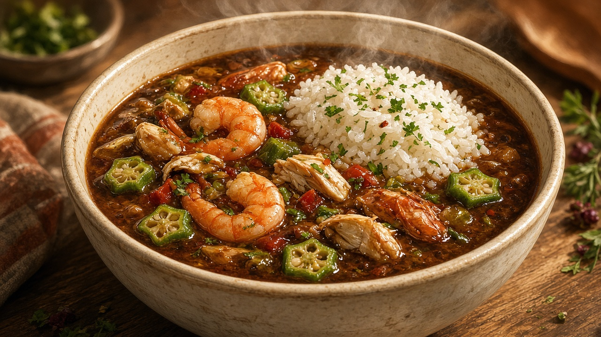
Kitchen anime plate
Chef says: Now children, gumbo ain’t a soup and it ain’t a stew — it’s a life lesson in a pot. Shellfish, smoked bird, and okra holding hands. Serve it over rice like you mean it.
This gumbo came off Julius’s kitchen scans — the kind of pot that gathers a whole house. Alfre’s way means smoked turkey, sausage, okra, and the Gulf showing up late with shrimp and crab. You don’t rush gumbo. You let it teach you patience one ladle at a time.
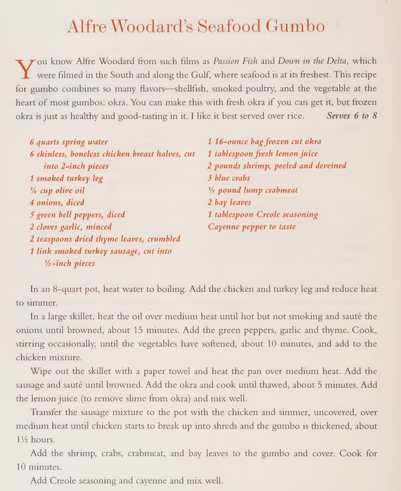
Serves 6 to 8
Ingredients
6 quarts spring water
6 skinless, boneless chicken breast halves, cut into 2-inch pieces
1 smoked turkey leg
1/4 cup olive oil
4 onions, diced
5 green bell peppers, diced
2 cloves garlic, minced
2 teaspoons dried thyme leaves, crumbled
1 link smoked turkey sausage, cut into 1/2-inch pieces
1 16-ounce bag frozen cut okra
1 tablespoon fresh lemon juice
2 pounds shrimp, peeled and deveined
3 blue crabs
1/3 pound lump crabmeat
2 bay leaves
1 tablespoon Creole seasoning
Cayenne pepper to taste
How you do it
In an 8-quart pot, bring water to boiling. Add the chicken and turkey leg and reduce heat to simmer.
In a large skillet, heat the oil over medium heat until hot but not smoking and sauté the onions until browned, about 15 minutes. Add the green peppers, garlic and thyme. Cook, stirring occasionally, until the vegetables have softened, about 10 minutes, and add to the chicken mixture.
Wipe out the skillet with a paper towel and heat the pan over medium heat. Add the sausage and sauté until browned. Add the okra and cook until thawed, about 5 minutes. Add the lemon juice (to cut the okra’s attitude) and mix well.
Transfer the sausage mixture to the pot with the chicken and simmer, uncovered, over medium heat until chicken starts to shred and the gumbo thickens, about 1½ hours.
Add the shrimp, crabs, crabmeat, and bay leaves. Cover and cook 10 minutes.
Add Creole seasoning and cayenne. Taste it. Respect it. Serve over rice.
Secrets of the Kitchen
Brown the onions properly — pale onions make pale gumbo. Take the full 15 minutes.
Lemon juice on okra isn’t folklore; it softens the ‘slime’ so the pot stays silky, not sticky.
Seafood goes in last. Overcooked shrimp turn into pencil erasers — 8 to 10 minutes is plenty.
Taste cayenne at the table, not just the stove. Heat blooms as the pot sits.
Day-two gumbo is wiser. Cool uncovered briefly, then refrigerate; reheat gently.
Everyday Love Quick Cornbread
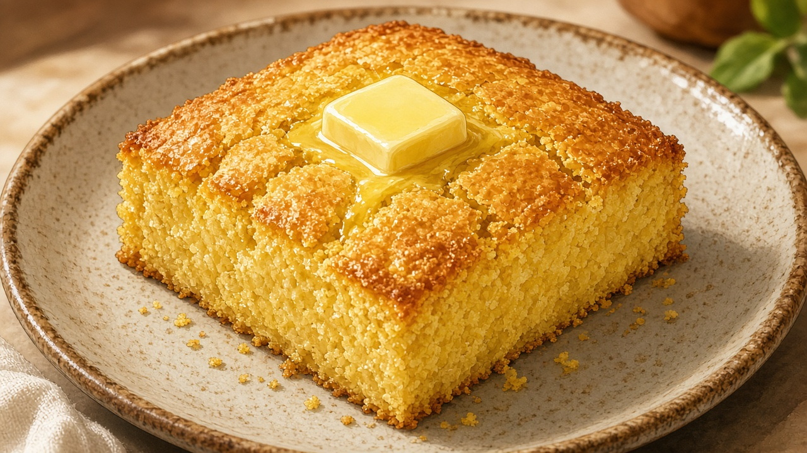
Kitchen anime plate
Chef says: Children, a man who can’t throw down cornbread on short notice is a man unprepared for life. Keep the mix ready. Keep the buttermilk honest.
Weeknight cornbread — the kind you bake while the greens simmer and somebody asks what’s for supper. Self-rising meal meets Jiffy, buttermilk keeps it tender, and a hot greased pan gives you that golden edge Southerners argue about in church parking lots.
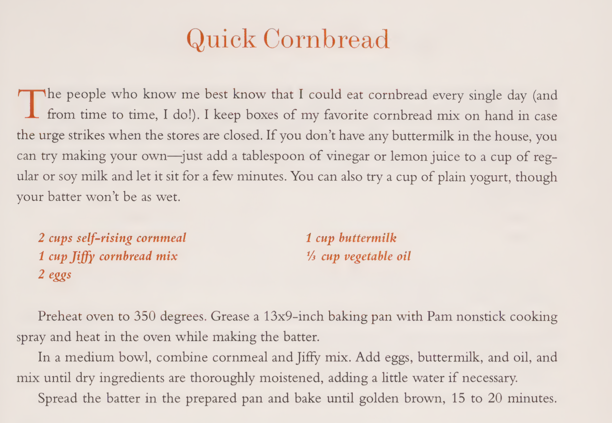
Serves one happy pan
Ingredients
2 cups self-rising cornmeal
1 cup Jiffy cornbread mix
2 eggs
1 cup buttermilk
1/3 cup vegetable oil
How you do it
Preheat oven to 350°F. Grease a 13×9-inch baking pan with cooking spray and heat it in the oven while you make the batter.
In a medium bowl, combine cornmeal and Jiffy mix. Add eggs, buttermilk, and oil; mix until moistened, adding a splash of water if needed.
Spread in the hot pan and bake until golden, 15 to 20 minutes.
Secrets of the Kitchen
Hot pan first — cold batter hitting hot fat is how you get that crisp bottom crust.
Stop mixing the second it’s moistened. Overworked cornbread turns dense and sad.
Buttermilk should be room-temp-ish; ice-cold dairy shocks the rise.
If the batter looks like thick cake batter, splash in water until it pours — it should ribbon, not clump.
North Memphis Hoecakes
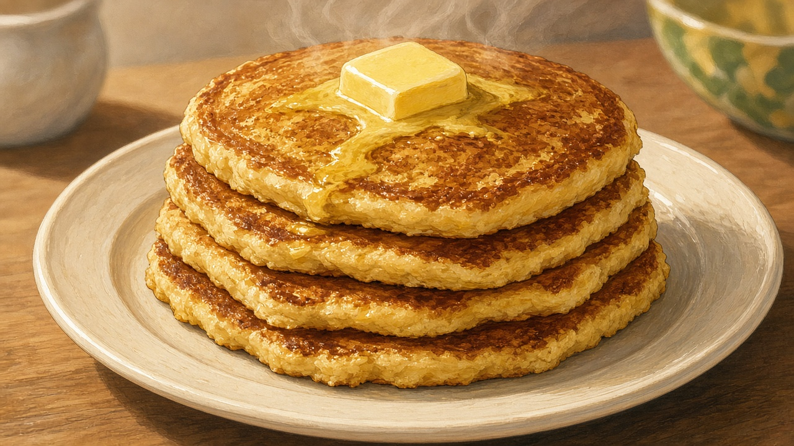
Kitchen anime plate
Chef says: These little cornmeal cakes got history in ’em, children. Skillet-fried, golden, and ready for molasses or gravy — don’t overthink it.
Hoecakes remember when cornmeal met a skillet and supper still needed to stretch. In North Memphis kitchens they stay thin, crisp-edged, and honest — molasses for sweet tooths, gravy for the serious, or plain beside beans.
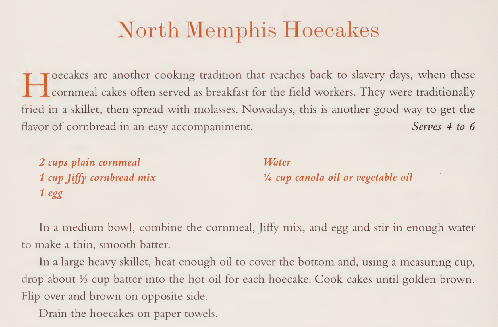
Serves 4 to 6
Ingredients
2 cups plain cornmeal
1 cup Jiffy cornbread mix
1 egg
Water (enough for a thin, smooth batter)
1/4 cup canola or vegetable oil
How you do it
Combine cornmeal, Jiffy mix, and egg; stir in water until the batter is thin and smooth.
Heat oil to cover the bottom of a heavy skillet. Drop about 1/3 cup batter per cake. Cook until golden; flip and brown the other side.
Drain on paper towels. Eat warm.
Secrets of the Kitchen
Batter should be thinner than pancake batter — think heavy cream, not muffin dough.
Oil depth matters: a skim isn’t enough; you want a shallow fry, not a dry pan.
Don’t crowd the skillet. Crowded cakes steam and turn pale.
Flip once. Peeking and poking breaks the crust you’re building.
Southern-Style Baked Grits
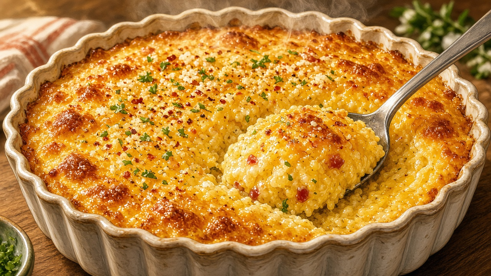
Kitchen anime plate
Chef says: Grits are comfort with a diploma. Breakfast, dinner, soak up the juices — when they’re good they’re great, and when they’re ordinary they’re still home.
Baked grits take the humble pot of morning comfort and dress it for supper — garlic, cheese that melts into the grain, eggs to set the casserole, cheddar on top like a gold crown. Church-supper energy in a 2-quart dish.
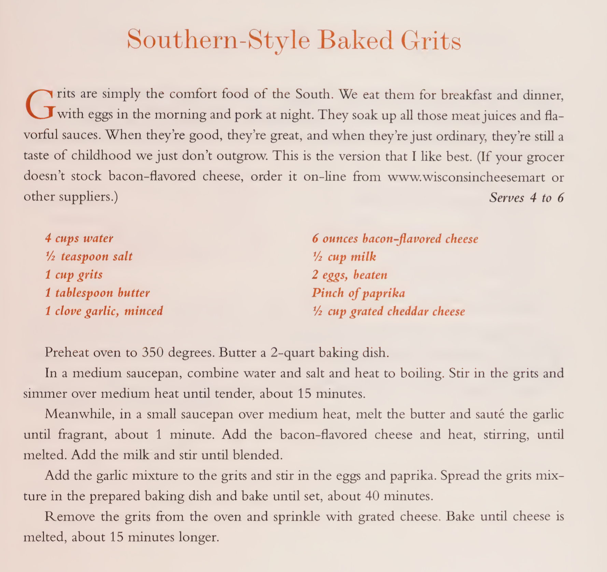
Serves 4 to 6
Ingredients
4 cups water
1/2 teaspoon salt
1 cup grits
1 tablespoon butter
1 clove garlic, minced
6 ounces bacon-flavored cheese
1/2 cup milk
2 eggs, beaten
Pinch of paprika
1/2 cup grated cheddar cheese
How you do it
Preheat oven to 350°F. Butter a 2-quart baking dish.
Boil water with salt; stir in grits and simmer until tender, about 15 minutes.
Melt butter; sauté garlic about 1 minute. Add bacon-flavored cheese until melted; stir in milk.
Fold garlic-cheese mixture into grits with eggs and paprika. Spread in dish; bake until set, about 40 minutes.
Top with cheddar; bake until melted, about 15 minutes more.
Secrets of the Kitchen
Whisk grits in vigorously when they hit boiling water — lumps form in the first 30 seconds.
Temper the eggs: stir a spoon of hot grits into the beaten eggs before folding, or you’ll scramble them.
Let the casserole rest 10 minutes after baking so it slices clean instead of collapsing.
Bacon-flavored cheese can be sharp cheddar + a pinch of smoked paprika if your store doesn’t stock it.
“Hot Buttered” Fried Creamed Corn
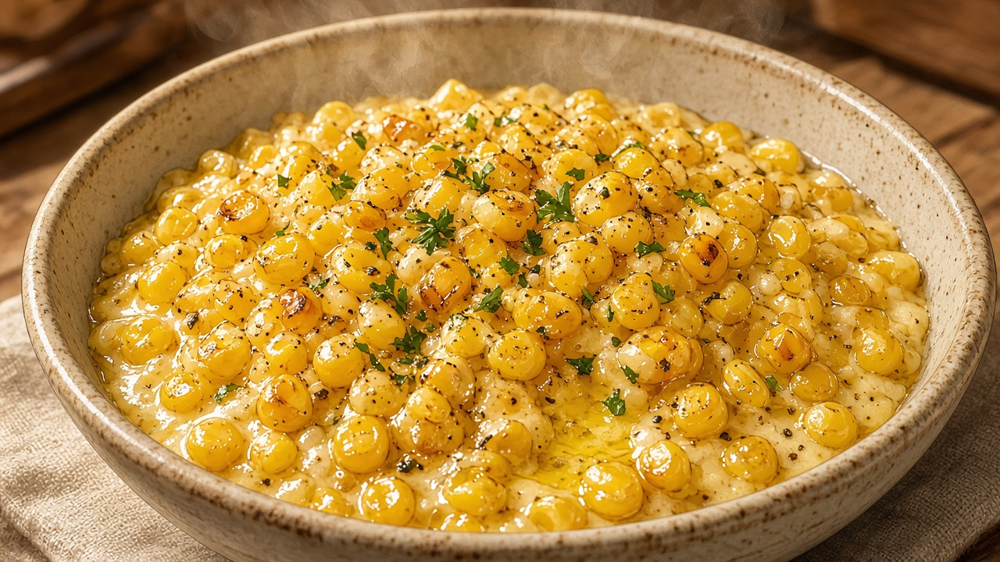
Kitchen anime plate
Chef says: Children, when bacon fat meets sweet corn, time travel is real. Mama’s wood stove taught me that — your skillet can too.
This is summer cut off the cob and fried in bacon drippings until the sugars caramelize just a little, then wrapped in evaporated milk and butter. Not canned creamed corn’s cousin — its wiser older sibling.
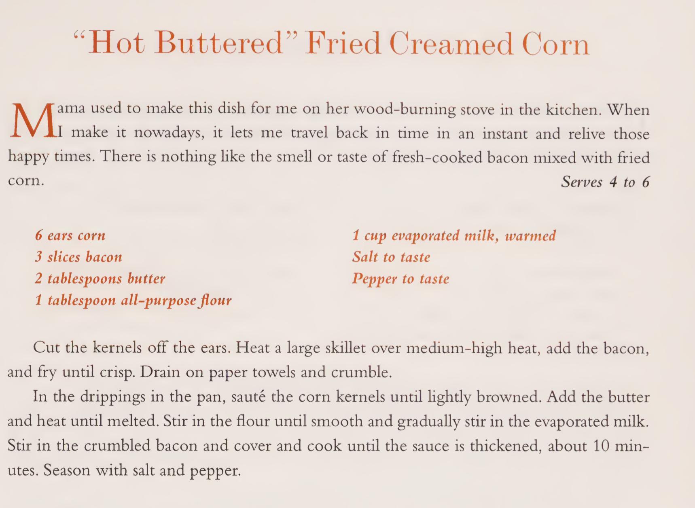
Serves 4 to 6
Ingredients
6 ears corn
3 slices bacon
2 tablespoons butter
1 tablespoon all-purpose flour
1 cup evaporated milk, warmed
Salt to taste
Pepper to taste
How you do it
Cut kernels off the cobs. Fry bacon until crisp; drain and crumble.
In the drippings, sauté corn until lightly browned. Add butter; stir in flour until smooth. Gradually add evaporated milk. Stir in bacon; cover and cook until thickened, about 10 minutes. Season with salt and pepper.
Secrets of the Kitchen
After cutting kernels, scrape the cob with the back of the knife — that ‘milk’ is free flavor.
Warm the evaporated milk before adding so the flour doesn’t seize into lumps.
Brown the corn lightly before the milk goes in — that Maillard kiss is the whole point.
Cover for the last simmer so it doesn’t scorch; stir once or twice to check the bottom.
Cheddar Baked Beans
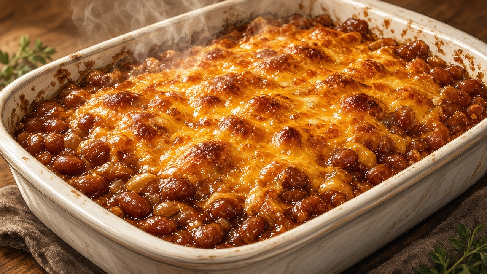
Kitchen anime plate
Chef says: Baked beans are America’s road trip in a dish — sweet, tangy, mysterious. I use the can when life is loud; from-scratch when love has time.
A pantry jazz improvisation: canned beans upgraded with peppers, a whisper of five-spice and curry, honey for shine, and cheddar cubes that melt into molten pockets. Weird spice list? That’s how family recipes get remembered.
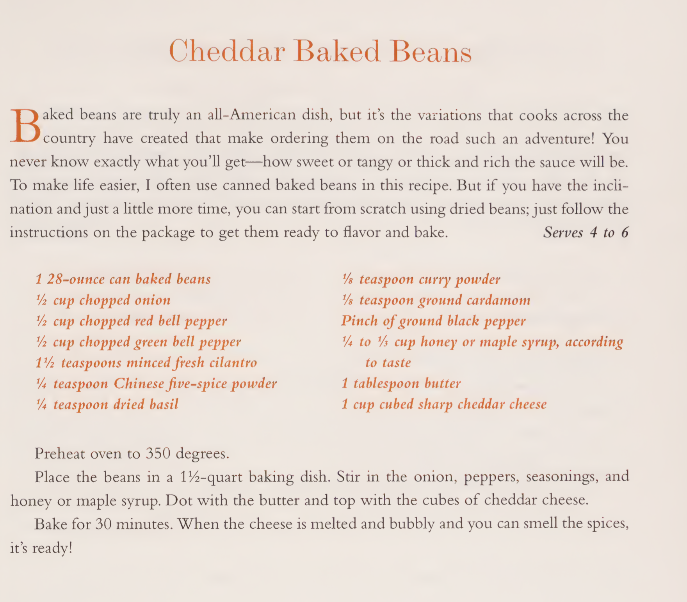
Serves 4 to 6
Ingredients
1 28-ounce can baked beans
1/2 cup chopped onion
1/2 cup chopped red bell pepper
1/2 cup chopped green bell pepper
1 1/2 teaspoons minced fresh cilantro
1/4 teaspoon Chinese five-spice powder
1/4 teaspoon dried basil
1/8 teaspoon curry powder
1/8 teaspoon ground cardamom
Pinch of ground black pepper
1/4 to 1/3 cup honey or maple syrup
1 tablespoon butter
1 cup cubed sharp cheddar cheese
How you do it
Preheat oven to 350°F.
Place beans in a 1½-quart baking dish. Stir in onion, peppers, seasonings, and honey or maple syrup. Dot with butter; top with cheddar cubes.
Bake 30 minutes, until cheese is bubbly and the spices announce themselves.
Secrets of the Kitchen
Cube the cheddar (don’t shred) so you get lava pockets instead of a sealed cheese lid.
Taste before baking — canned beans vary wildly in sweetness; adjust honey accordingly.
The tiny spice amounts matter: toast them briefly in your palm smell-test before dumping in.
Rest 5 minutes out of the oven so the sauce thickens instead of running all over the plate.
Homemade Baked Beans with Love
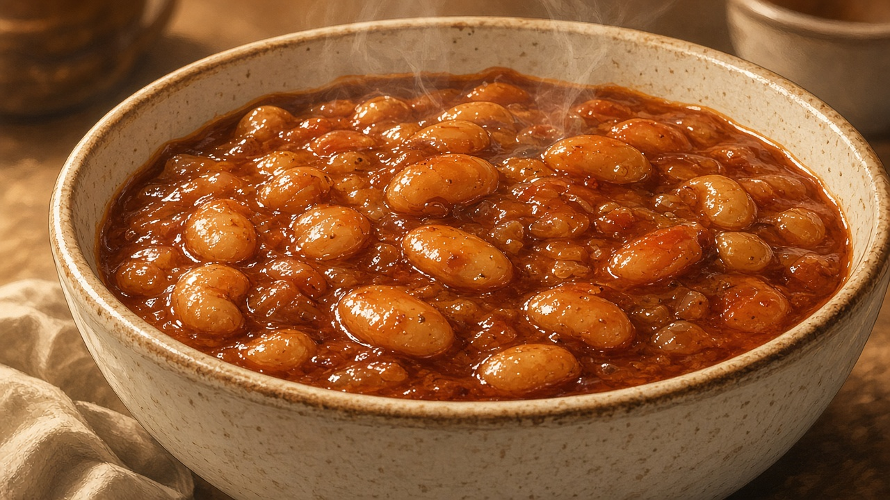
Kitchen anime plate
Chef says: Love ain’t on the ingredient list, children — you gotta bring that yourself. Navy beans, tomato paste, a little sweetness… and ribs on the side if you got ’em.
From-scratch navy beans when you want the quiet version — tomato paste stretched with spring water, brown sugar or honey, butter for roundness. Simple enough to cook while the ribs finish. Love is the part you can’t measure.
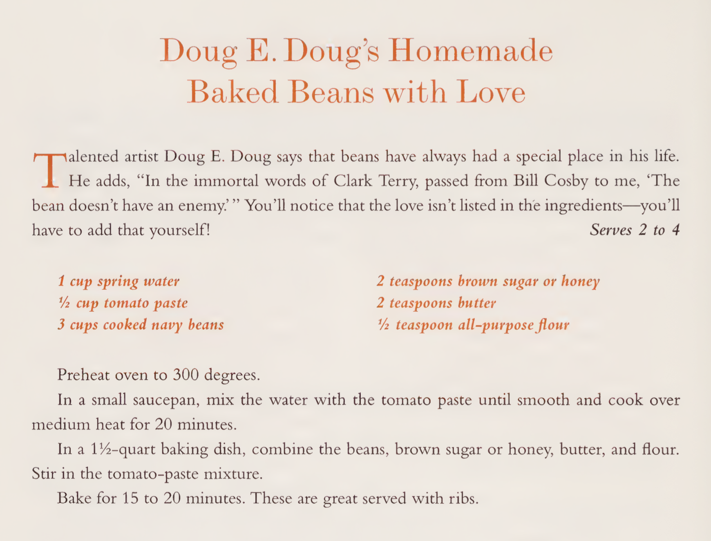
Serves 2 to 4
Ingredients
1 cup spring water
1/2 cup tomato paste
3 cups cooked navy beans
2 teaspoons brown sugar or honey
2 teaspoons butter
1/2 teaspoon all-purpose flour
How you do it
Preheat oven to 300°F.
Mix water and tomato paste until smooth; cook over medium heat 20 minutes.
In a 1½-quart baking dish, combine beans, sugar or honey, butter, and flour. Stir in the tomato mixture.
Bake 15 to 20 minutes. Serve with ribs if the spirit moves you.
Secrets of the Kitchen
Cook the tomato-water mixture the full 20 minutes — raw paste tastes metallic until it mellows.
Use already-cooked, well-drained beans; wet beans dilute the sauce into soup.
Low oven (300°F) keeps sugar from scorching while flavors marry.
A pinch of salt and black pepper (not on the original card) wakes everything up — season to taste.
Spicy Stewed Tomatoes
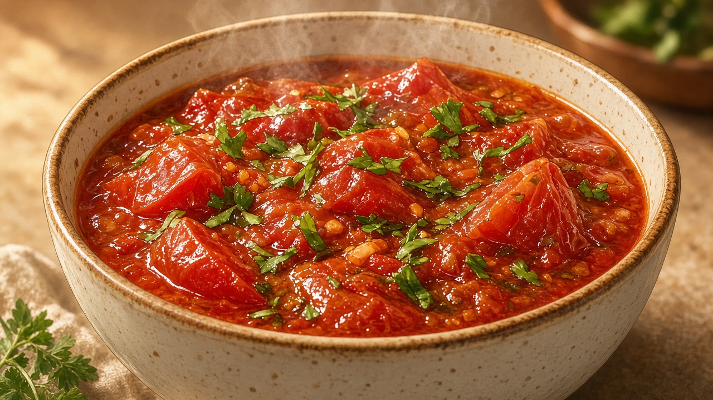
Kitchen anime plate
Chef says: Don’t sleep on stewed tomatoes, children. Better than the can, patient on the stove, a little cayenne for truth-telling.
Ripe beefsteaks broken down with maple, cider vinegar, and garden herbs until they surrender. Side dish, biscuit topper, or the bright note next to fried fish — cayenne keeps them honest.
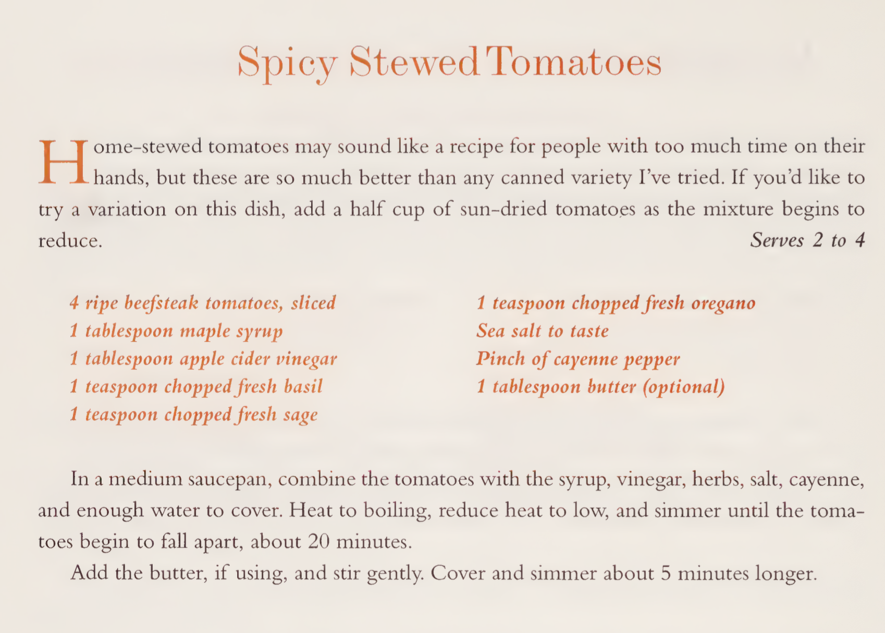
Serves 2 to 4
Ingredients
4 ripe beefsteak tomatoes, sliced
1 tablespoon maple syrup
1 tablespoon apple cider vinegar
1 teaspoon chopped fresh basil
1 teaspoon chopped fresh sage
1 teaspoon chopped fresh oregano
Sea salt to taste
Pinch of cayenne pepper
1 tablespoon butter (optional)
How you do it
Combine tomatoes, syrup, vinegar, herbs, salt, cayenne, and enough water to cover.
Bring to a boil; reduce heat and simmer until tomatoes fall apart, about 20 minutes.
Stir in butter if using; cover and simmer 5 minutes more.
Secrets of the Kitchen
Use truly ripe tomatoes — hard winter ones stew into sour sadness.
Vinegar + maple is the balance: taste after 15 minutes and nudge sweet or sharp.
Don’t pulverize with a blender; the broken slices are the texture you want.
Butter at the end rounds acidity the way cream does in tomato soup.
Smashing Mashed Potatoes
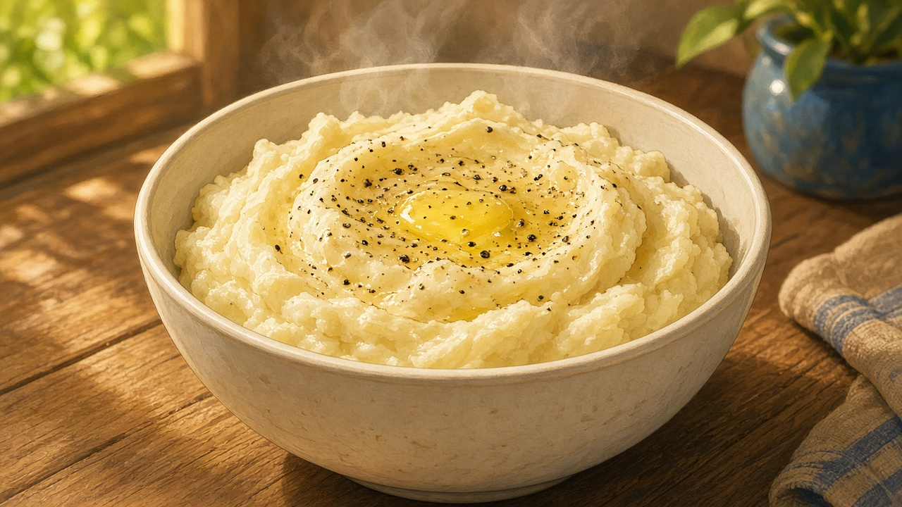
Kitchen anime plate
Chef says: One house rule, children: no lumps. Evaporated milk, a little Miracle Whip, butter — mash until your problems get creamy too.
These aren’t fancy Parisian purée — they’re Southern smashed potatoes with evaporated milk for body and a spoon of Miracle Whip for tang that makes people ask what you put in them. Tell them it’s love. Or don’t.
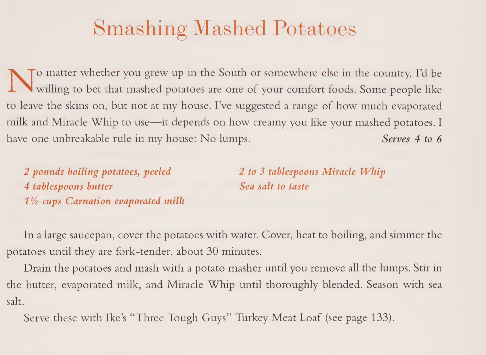
Serves 4 to 6
Ingredients
2 pounds boiling potatoes, peeled
4 tablespoons butter
1½ cups evaporated milk
2 to 3 tablespoons Miracle Whip
Sea salt to taste
How you do it
Cover potatoes with water; boil and simmer until fork-tender, about 30 minutes.
Drain and mash until lump-free. Stir in butter, evaporated milk, and Miracle Whip. Season with sea salt.
Secrets of the Kitchen
Start potatoes in cold salted water so they cook evenly — hot water = raw cores.
Drain hard, then return the pot to low heat 30 seconds to steam off extra moisture before mashing.
Warm the evaporated milk; cold milk makes gluey potatoes.
Miracle Whip goes in last, off heat — heat can make mayonnaise-style dressings separate.
Part II — Southern Top Ten
The backbone dishes — fried chicken to pecan pie — written in Chef’s voice for every table that needs the classics.
Buttermilk Fried Chicken
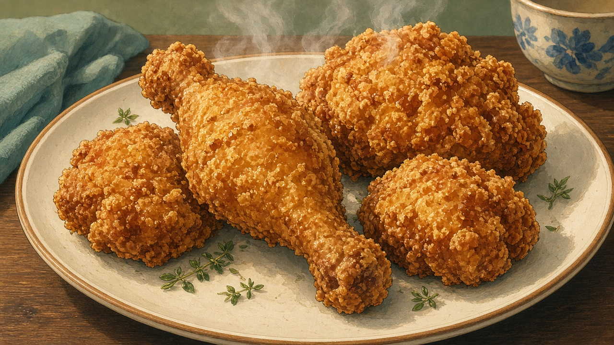
Kitchen anime plate
Chef says: Children, fried chicken is a covenant. Buttermilk for tenderness, seasoned flour for the jacket, hot oil for the sermon. Respect the rest time or eat regret.
Sunday table icon across Black and white Southern kitchens alike — the bird that gathers cousins, church hats, and extra napkins. This home version leans on a buttermilk soak and a double dredge for that shatter-crisp crust.
Whisk buttermilk, hot sauce, and 2 tsp salt. Submerge chicken; refrigerate 4 hours or overnight.
Mix flour with remaining seasonings in a wide bowl.
Heat 1½ inches oil in a heavy skillet or Dutch oven to 325–350°F.
Remove chicken from buttermilk, letting excess drip. Dredge thoroughly in flour; rest on a rack 10 minutes. Optional: dip back in buttermilk and dredge again for extra crunch.
Fry in batches, dark meat first, turning once, until deep golden and 165°F inside (thighs ~14–18 min, breasts ~10–14). Drain on a wire rack, not paper towels alone.
Secrets of the Kitchen
Oil at 325°F when chicken goes in — it drops; you want to settle around 300–325°F while frying.
Rest dredged chicken 10 minutes so the crust hydrates and sticks instead of falling off.
Wire rack > paper towels: steam under the bird softens crust if it sits flat on towels.
Don’t skip salt in the buttermilk — that’s your brine, not just a soak.
Never crowd: overcrowding collapses oil temp and you get greasy pale chicken.
Buttermilk Biscuits & Sausage Gravy
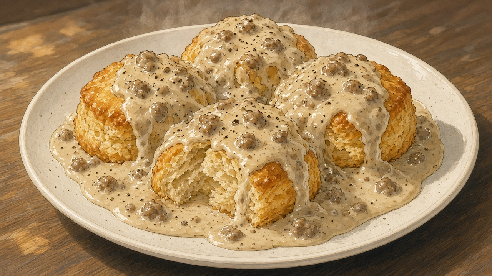
Kitchen anime plate
Chef says: Biscuits are architecture, children. Cold butter, gentle hands, hot oven. Gravy is forgiveness poured on top — sage sausage and black pepper doing the talking.
Breakfast that became anytime food — soft buttermilk biscuits split open under peppery sausage gravy. This is the plate that says the day can wait five more minutes.
Southern Top Ten · Flaky, peppery, forgiven
Serves 4 to 6
Ingredients
BISCUITS: 2 cups all-purpose flour
1 tablespoon baking powder
1/2 teaspoon baking soda
1 teaspoon salt
6 tablespoons cold unsalted butter, cubed
3/4 to 1 cup cold buttermilk
GRAVY: 1 lb pork breakfast sausage
1/4 cup all-purpose flour
2½ to 3 cups whole milk
1 tsp black pepper (or more)
Salt to taste
Pinch of cayenne (optional)
How you do it
Preheat oven to 450°F. Whisk flour, baking powder, soda, salt. Cut in butter until pea-sized. Stir in buttermilk just until dough comes together.
Turn onto floured board; pat to ¾-inch. Cut with a floured cutter — no twisting. Bake 12–15 minutes until tall and golden.
Meanwhile, brown sausage in a skillet, breaking it up. Sprinkle flour over fat; cook 1 minute. Whisk in milk gradually; simmer until thick. Season boldly with pepper and salt.
Split warm biscuits; ladle gravy over like you mean it.
Secrets of the Kitchen
Butter and buttermilk ice-cold — warm fat melts and you lose flake.
Never twist the biscuit cutter; twisting seals edges so they won’t rise.
Gravy wants more black pepper than you think — taste after it thickens.
If gravy goes pasty, splash milk; if thin, simmer longer — don’t dump more raw flour.
Cast-Iron Cornbread
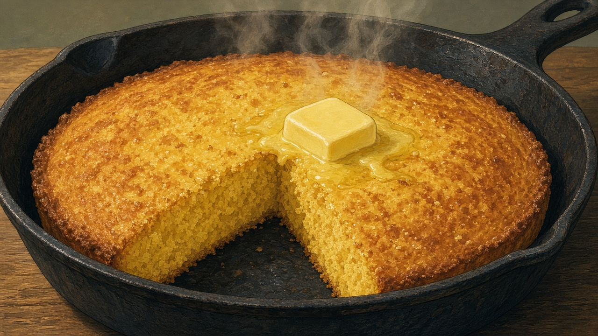
Kitchen anime plate
Chef says: Real cornbread hears the skillet scream when batter hits hot bacon fat. No sugar arguments at my table — make it how your people taught you, but get that crust.
The skillet staple — pot-likker’s best friend, chili’s roof, collards’ sidekick. Preheat the iron, shimmer the fat, pour, and listen for the sizzle that means crust is coming.
Southern Top Ten · Skillet hymn
Serves 6 to 8 (10-inch skillet)
Ingredients
2 tablespoons bacon drippings or oil
1½ cups fine yellow cornmeal
1/2 cup all-purpose flour
1 teaspoon baking powder
1/2 teaspoon baking soda
1 teaspoon salt
1 tablespoon sugar (optional)
2 large eggs
1½ cups buttermilk
4 tablespoons melted butter
How you do it
Put drippings in a 10-inch cast-iron skillet; place in oven and heat to 425°F.
Whisk dry ingredients. In another bowl, whisk eggs, buttermilk, melted butter. Combine just until moistened.
Carefully swirl hot fat to coat skillet; pour batter in (it should sizzle). Bake 20–25 minutes until golden and a tester comes out clean.
Rest 5 minutes; slice wedges. Serve with butter, honey, or pot likker.
Secrets of the Kitchen
The preheat is non-negotiable — cold iron = pale bottom.
Bacon drippings beat neutral oil for flavor; save them in a jar like treasure.
Pull when edges pull from the pan slightly; overbaking dries the crumb.
Sugar is regional theology — omit for savory Deep South style, keep a spoon for sweeter Mid-South tables.
Baked Macaroni & Cheese
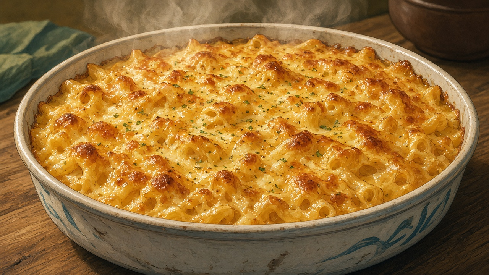
Kitchen anime plate
Chef says: Children, mac and cheese is not a box and a prayer. It’s a béchamel with backbone, sharp cheddar with opinions, and a bake that bubbles at the edges like applause.
Soul-food and church-supper essential — creamy center, bronzed top, the dish that disappears first at the potluck. This version builds a real cheese sauce, then bakes it proud.
Southern Top Ten · Bubbling edges of joy
Serves 6 to 8
Ingredients
1 lb elbow macaroni
4 tablespoons butter
1/4 cup all-purpose flour
3 cups whole milk, warmed
1 teaspoon dry mustard
1/2 teaspoon paprika
1/2 teaspoon salt
1/4 teaspoon black pepper
3 cups shredded sharp cheddar
1 cup shredded Gruyère or more cheddar
1/2 cup crushed Ritz or buttered breadcrumbs (topping)
2 tablespoons butter, melted (for topping)
How you do it
Cook pasta 1–2 minutes shy of package directions; drain. Preheat oven to 350°F. Butter a 9×13 dish.
Melt 4 Tbsp butter; whisk in flour 1–2 minutes. Gradually whisk in warm milk; simmer until thick. Season with mustard, paprika, salt, pepper.
Off heat, stir in most of the cheeses until melted. Fold in pasta. Spread in dish; top with remaining cheese mixed with crumbs and melted butter.
Bake 25–30 minutes until bubbling and golden. Rest 10 minutes before serving.
Secrets of the Kitchen
Undercook pasta — it finishes in the oven and stays al dente, not mush.
Warm milk into the roux prevents lumps; cold milk fights you.
Sharp cheddar for flavor, a little melty cheese (Gruyère/American) for stretch — all-cheddar can turn grainy if overheated.
Rest after baking: molten cheese needs a minute to set into scoopable glory.
Collard Greens with Smoked Turkey
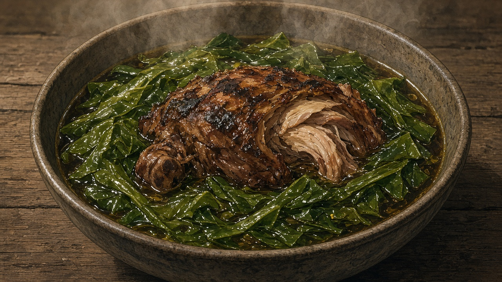
Kitchen anime plate
Chef says: Greens ain’t boiled punishment, children — they’re a slow conversation with smoked meat and pot likker. Save that liquor. That’s liquid gold for cornbread dunking.
Year-round comfort and New Year’s luck — collards simmered with smoked turkey until silky, vinegar on the side for the bright folks, hot sauce for the brave. The pot likker is half the reason you cook them.
Southern Top Ten · Pot likker included
Serves 6 to 8
Ingredients
2 bunches collard greens (about 2 lb), stemmed and chopped
1 smoked turkey wing or leg
1 large onion, sliced
3 cloves garlic, smashed
6 cups chicken stock or water
1 tablespoon apple cider vinegar (plus more to serve)
1 teaspoon sugar
1/2 teaspoon red pepper flakes
Salt and black pepper to taste
Hot sauce for the table
How you do it
Rinse greens thoroughly in several changes of water — grit hides in the folds.
In a large pot, simmer smoked turkey, onion, garlic, and stock 30 minutes to start a broth.
Add greens in handfuls as they wilt. Stir in vinegar, sugar, pepper flakes. Simmer uncovered or partly covered 45–90 minutes until tender to your liking.
Season with salt and pepper. Serve with pot likker, extra vinegar, and hot sauce.
Secrets of the Kitchen
Wash like you mean it — sandy greens ruin the whole pot.
Smoked turkey > ham hock if you want deep smoke without as much salt bomb; still taste before salting.
Acid at the end brightens; too much early can keep greens from softening.
Don’t throw away pot likker — cornbread was invented to chase it.
Shrimp & Cheese Grits
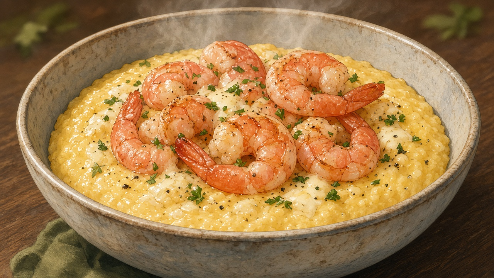
Kitchen anime plate
Chef says: Lowcountry sent shrimp and grits up the coast and into every brunch menu, children. Creamy cheese grits below, garlicky shrimp and gravy above — that’s balance.
From fish-camp breakfast to white-tablecloth supper, shrimp and cheese grits carry the Lowcountry into the wider South. Stone-ground if you can get them; patience either way.
Southern Top Ten · Lowcountry in a bowl
Serves 4
Ingredients
GRITS: 1 cup stone-ground grits
4 cups water or stock
1 cup milk
2 tablespoons butter
1 cup sharp cheddar, shredded
Salt to taste
SHRIMP: 1 lb large shrimp, peeled
4 slices bacon, chopped
1 small onion, diced
1 bell pepper, diced
2 cloves garlic
1/2 cup chicken stock
1 tablespoon lemon juice
1/2 teaspoon Cajun seasoning
2 green onions, sliced
Salt & pepper
How you do it
Cook grits in water/stock per package (stone-ground often 30–45 min), stirring. Finish with milk, butter, cheddar, salt. Keep warm.
Cook bacon until crisp; remove. In drippings, sauté onion and pepper until soft; add garlic 30 seconds.
Add shrimp and Cajun seasoning; cook until just pink. Deglaze with stock and lemon; simmer briefly. Return bacon; adjust salt.
Spoon grits into bowls; top with shrimp, gravy, and green onions.
Secrets of the Kitchen
Stone-ground grits need low-and-slow and frequent stirring — rush them and they stay gritty.
Pull shrimp the second they curl into C-shapes; O-shapes are overcooked.
Cheese off heat into grits so it melts smooth instead of breaking.
A squeeze of lemon at the end cuts the richness — don’t skip acid.
BBQ Pulled Pork
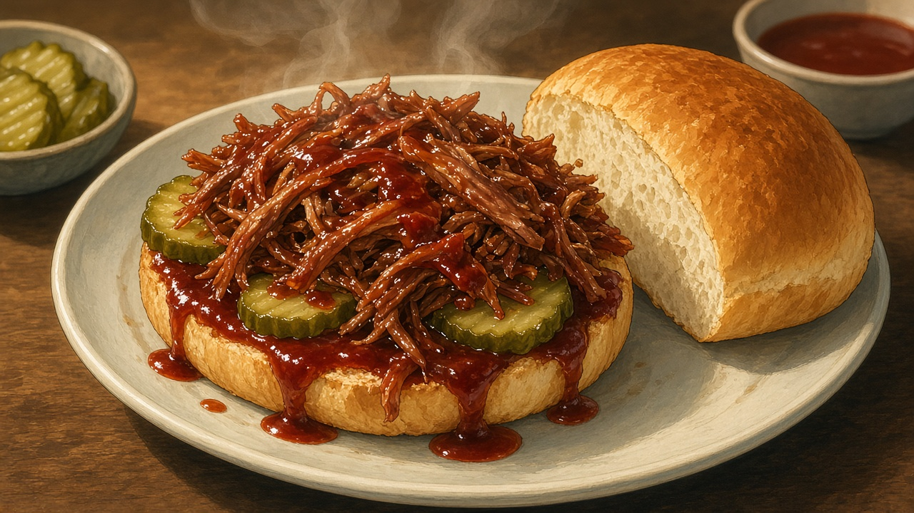
Kitchen anime plate
Chef says: Barbecue is geography you can taste, children. This is a home oven/smoker-friendly pork shoulder with a vinegar-kissed sauce — pick your regional allegiance at the table.
Pulled pork is patience meat — pork shoulder rubbed, cooked low until it surrenders, then dressed in sauce that argues vinegar vs tomato depending on which state raised you. Serve on buns or with slaw.
Southern Top Ten · Low & slow surrender
Serves 8 to 10
Ingredients
4–5 lb boneless pork shoulder (Boston butt)
2 tablespoons kosher salt
2 tablespoons brown sugar
1 tablespoon paprika
1 tablespoon black pepper
1 teaspoon garlic powder
1 teaspoon onion powder
1/2 teaspoon cayenne
SAUCE: 1 cup apple cider vinegar
1/2 cup ketchup
2 tablespoons brown sugar
1 tablespoon mustard
1 teaspoon hot sauce
1/2 teaspoon salt
1/2 teaspoon pepper
How you do it
Mix rub; coat pork generously. Rest refrigerated at least 2 hours or overnight.
Cook low: smoker at 250°F, or oven at 300°F in a roasting pan with a splash of apple cider in the bottom, covered after the first hour, until 195–205°F internal and probe-tender (often 5–7 hours).
Rest 30–45 minutes tented. Shred with forks, discarding big fat globs.
Whisk sauce ingredients; warm. Toss pork with enough sauce to gloss; serve rest on the side.
Secrets of the Kitchen
Temperature targets matter more than clock time — pull when probe slides in like warm butter (~200°F).
Rest before pulling or juices run all over the board instead of staying in the meat.
Sauce goes on after pulling so you control wet vs dry; never boil the meat in sauce for hours.
Vinegar-forward sauce wakes fatty pork — taste and add sugar only if your crowd needs it.
Chicken & Dumplings
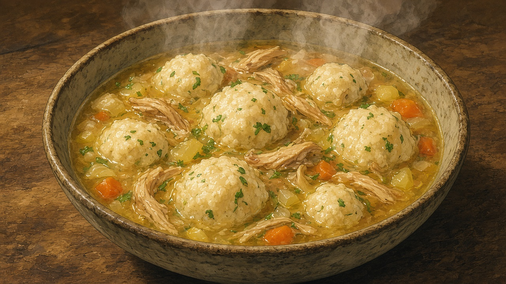
Kitchen anime plate
Chef says: This is sick-day medicine and celebration food in the same pot, children. Flat dumplings or drop — both legal. Broth must taste like somebody cared.
Appalachian and Deep South comfort classic — stewed chicken, rich broth, dumplings that soak up love. Every grandmother swears hers is correct. This one leans flat, peppery, and honest.
Southern Top Ten · Broth & soft pillows
Serves 6
Ingredients
1 whole chicken (3–4 lb) or 3 lb bone-in parts
10 cups water
1 onion, quartered
2 carrots
2 celery stalks
2 bay leaves
Salt & pepper
DUMPLINGS: 2 cups all-purpose flour
1 teaspoon salt
1/2 teaspoon baking powder
1/3 cup shortening or cold butter
2/3 to 3/4 cup cold buttermilk or ice water
2 tablespoons butter
1/4 cup cream or evaporated milk (optional finish)
Fresh parsley or thyme
How you do it
Simmer chicken with aromatics and water until tender, ~1 hour. Remove chicken; strain broth, return 8 cups to pot. Season well. Shred chicken off the bone.
For dumplings: mix flour, salt, baking powder; cut in fat; add liquid to form a soft dough. Roll thin (⅛-inch); cut into strips or squares.
Bring broth to a gentle boil; drop dumplings one by one. Cover and simmer 12–15 minutes without peeking too much.
Return chicken; stir in butter and cream if using. Taste for salt and lots of black pepper. Serve hot.
Secrets of the Kitchen
Season the broth like soup before dumplings go in — flour dumplings dilute flavor.
Don’t stir aggressively after adding dumplings or they break into mush.
Bone-in chicken makes better broth than boneless breasts alone — bones are free stock.
Thin-rolled flat dumplings cook faster and soak broth better than thick dough bombs.
Banana Pudding
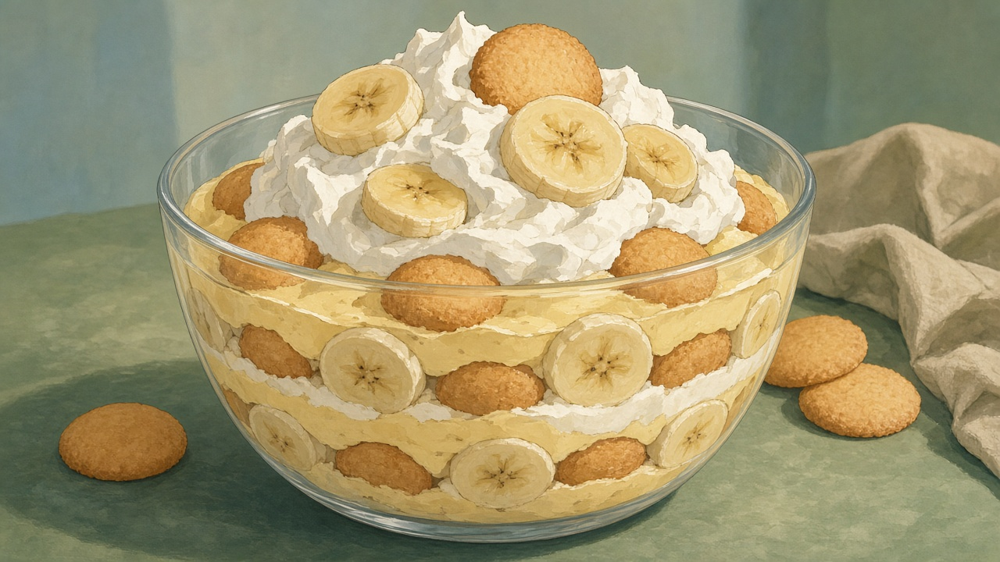
Kitchen anime plate
Chef says: Vanilla wafers, custard, bananas — layered like a good friendship. Chill it so the cookies soften into cake. That’s not a flaw, children — that’s the plan.
The dessert of church basements and family reunions — cooked custard (or the honest shortcut), ripe bananas, Nilla wafers, maybe meringue or whipped cream on top. Soft, cold, and gone by sundown.
Southern Top Ten · Wafer-soft glory
Serves 8
Ingredients
3/4 cup sugar
1/3 cup all-purpose flour
1/4 teaspoon salt
4 large egg yolks
3 cups whole milk
2 teaspoons vanilla extract
2 tablespoons butter
1 box vanilla wafers (~11 oz)
4–5 ripe bananas, sliced
TOPPING: 1 cup heavy cream whipped with 2 Tbsp sugar, or meringue from egg whites
How you do it
Whisk sugar, flour, and salt in a saucepan. Whisk in yolks, then gradually milk. Cook over medium heat, stirring constantly, until thick and bubbling, ~8–10 minutes. Off heat: stir in vanilla and butter. Cool slightly.
In a 9×13 or trifle dish, layer wafers, banana slices, and warm custard. Repeat. End with custard.
Top with whipped cream or bake on a meringue at 350°F until tipped golden.
Chill at least 4 hours (overnight best) so wafers soften.
Secrets of the Kitchen
Bananas should be ripe with freckles but not black mush — too green tastes starchy.
Constant stirring on the custard — walk away and you’ll scramble yolks on the bottom.
Warm custard over bananas helps them not brown as fast; still chill promptly.
Overnight rest is the secret texture: cookies become cake-like. Serve cold.
Pecan Pie
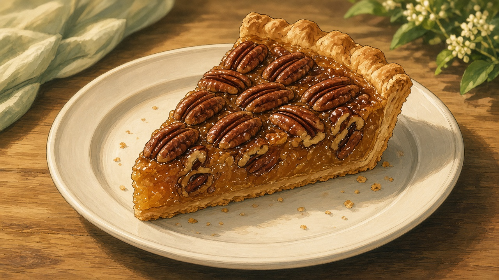
Kitchen anime plate
Chef says: Pecan pie is sticky theology, children. Toasted nuts, dark sugar, a set custard that slices clean. Burn the crust and I’ll know.
Holiday finale and potluck closer — Georgia and Texas both claim pecan pride. Toast the nuts, mind the bake so the center barely jiggles, and cool completely before you preach about slices.
Southern Top Ten · Sticky, set, sacred
One 9-inch pie (8 slices)
Ingredients
1 unbaked 9-inch pie crust
2 cups pecan halves
3 large eggs
1 cup light corn syrup
1/2 cup packed brown sugar
1/4 cup melted butter
1 tablespoon vanilla
1/2 teaspoon salt
1 tablespoon bourbon (optional)
How you do it
Preheat oven to 350°F. Toast pecans on a sheet 8 minutes until fragrant; cool. Scatter in crust.
Whisk eggs, corn syrup, brown sugar, butter, vanilla, salt, and bourbon. Pour over pecans (nuts rise — that’s normal).
Bake 50–60 minutes until edges are set and center jiggles slightly like gelatin. Tent crust with foil if browning too fast.
Cool on a rack at least 3 hours before slicing.
Secrets of the Kitchen
Toast pecans first — raw nuts taste flat compared to roasted.
Pull when the center still has a slight wobble; it finishes setting as it cools. Wait for firm and you get candy-brick.
Cool completely — warm pecan pie slices into soup.
Blind-bake the crust 10 minutes if you hate soggy bottoms; dock and weight it.
Part III — Celebrity Kitchen
Documented favorites only. Warm homage — never impersonation. Children, the famous pull up a chair; we keep the ladle.
Elvis Presley — Graceland & Memphis
Southern connection: Tupelo, MS → Memphis, TN; Graceland kitchen lore
Children, tip your hat to Tupelo and Memphis. I won’t pretend to be the King — I’m just cooking in the shadow of what Graceland’s cooks said he loved. Documented favorites only. Pass the napkin.
Documented favorites (Graceland cooks Mary Jenkins Langston, Nancy Rooks; Adler’s cuisine biography): fried PB & banana sandwich, meatloaf, banana pudding, crisp bacon breakfasts. Homage recipes — not official Elvis Presley Enterprises products.
Chef says: Children, I ain’t Elvis — I’m just a cafeteria philosopher paying respects. Graceland cooks fried this sandwich in butter until the bread went gold and the banana went soft. That’s documented love, not rumor.
Mary Jenkins Langston and other Graceland cooks described the King’s fried PB-and-banana sandwich so often it became American folklore. White bread, peanut butter, ripe banana, skillet butter — sometimes bacon fat in the telling. This is a home-kitchen homage to that documented favorite.
Graceland homage · Documented favorite
Serves 1 hungry legend (or 2 who share)
Ingredients
2 slices soft white bread
2–3 tablespoons creamy peanut butter
1 ripe banana, sliced
2–3 tablespoons butter (or bacon drippings)
How you do it
Spread peanut butter thick on both slices. Layer banana on one side; close the sandwich.
Melt butter in a skillet over medium heat. Fry sandwich until deep golden, 2–3 minutes per side, pressing gently.
Slice diagonally. Serve hot. Optional: crisp bacon on the side if you’re living dangerously.
Secrets of the Kitchen
Banana must be ripe — green bananas stay chalky when fried.
Medium heat, not screaming high: you want the center warm before the bread burns.
Butter the pan, not the outside of the bread (or do both if you like extra shatter).
Press gently with a spatula so peanut butter seals the edges — less banana escape.
Graceland-Style Meatloaf (Homage)
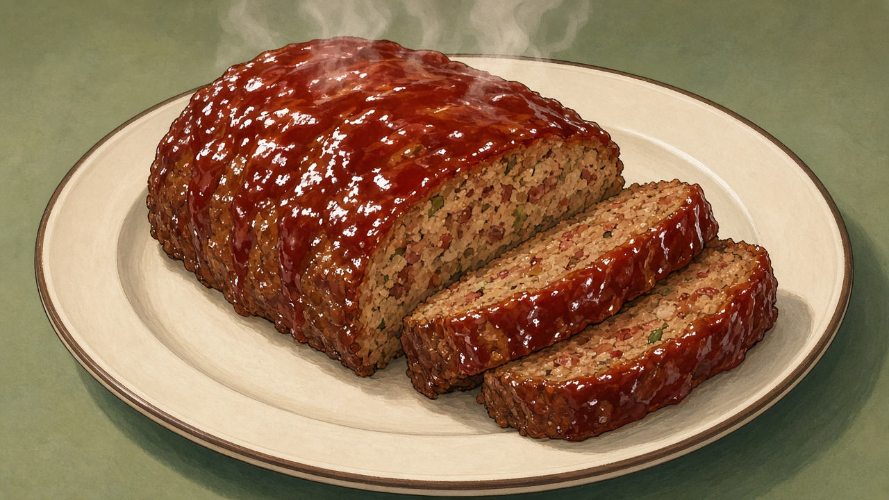
Kitchen anime plate
Chef says: Meatloaf fed the King between shows, children — Mary Jenkins’ kitchen again. This is a home loaf inspired by that Memphis table, not a stolen recipe card.
Alongside the famous sandwich, Graceland cooks pointed to meatloaf as everyday comfort at Elvis’s table. A glazed loaf, soft crumb, leftover sandwiches the next day — Southern meatloaf culture with a Memphis spotlight.
Memphis table homage · Meatloaf night
Serves 6 to 8
Ingredients
2 lb ground beef (or beef/pork mix)
1 cup breadcrumbs or crushed saltines
1/2 cup milk
2 eggs
1 onion, finely chopped
2 cloves garlic, minced
1/4 cup ketchup (plus 1/3 cup for glaze)
1 tablespoon Worcestershire
1 teaspoon salt
1/2 teaspoon black pepper
1 tablespoon brown sugar (for glaze)
1 teaspoon mustard (for glaze)
How you do it
Preheat oven to 350°F. Mix milk and breadcrumbs; let soak 5 minutes. Combine with meat, eggs, onion, garlic, 1/4 cup ketchup, Worcestershire, salt, pepper — gentle hands.
Shape into a freeform loaf on a lined sheet (or pack a loaf pan). Mix glaze: ketchup, brown sugar, mustard; spread on top.
Bake 55–70 minutes to 160°F internal. Rest 10 minutes before slicing.
Secrets of the Kitchen
Soak crumbs in milk first — dry crumbs steal moisture from the meat.
Mix until just combined; overworking makes tough meatloaf.
Freeform on a sheet browns better than a steamy loaf pan.
Rest before slicing or it crumbles into sad rubble.
Dolly Parton — Locust Ridge, East Tennessee
Southern connection: Sevier County / Locust Ridge; country music & country cooking
Children, we honor Miss Dolly the way you honor a neighbor who feeds the whole hollow — with chicken and dumplin’s and gratitude. Fan homage. She writes the songs; we mind the stove.
Documented: chicken & dumplin’s (TODAY; Dixie Fixin’s; Good Lookin’ Cookin’ with Rachel), Sunday fried chicken, peanut butter fudge, milk gravy for Carl. Strength: Solid.
Chicken & Dumplin’s (Dolly Homage)
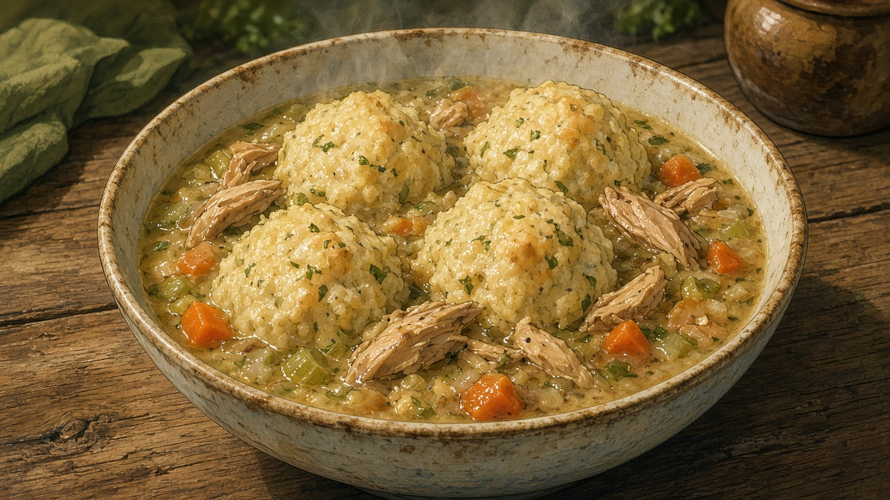
Kitchen anime plate
Chef says: Dolly Parton ain’t in this kitchen, children — but East Tennessee chicken and dumplin’s sure are. She talks about ’em on TV, in cookbooks with sister Rachel, on sets when co-stars beg. We tip our apron and cook with respect.
Sevier County’s favorite daughter has called chicken and dumplin’s a specialty and birthday favorite (TODAY; Dixie Fixin’s; Good Lookin’ Cookin’ with Rachel). This pot is a home homage to that East Tennessee comfort — flat dumplings, peppery broth, no rhinestones required.
East Tennessee homage · Dumplin’ pot
Serves 6
Ingredients
1 whole chicken or 3 lb bone-in thighs/breasts
10 cups water
1 onion
2 carrots
2 celery ribs
Bay leaf, salt, pepper
DUMPLINGS: 2 cups flour
1 tsp salt
1/2 tsp baking powder
1/3 cup shortening
3/4 cup buttermilk
2 Tbsp butter
Black pepper generously
Parsley
How you do it
Stew chicken with aromatics until tender; remove meat, strain broth, season boldly. Return ~8 cups broth to simmer.
Make dumpling dough; roll thin; cut squares. Drop into gently boiling broth; cover 12–15 minutes.
Return shredded chicken; finish with butter and enough black pepper to make Dolly proud. Serve in bowls.
Secrets of the Kitchen
Broth must taste finished before dumplings — flour will mute it.
Thin dough for ‘dumplin’s’ that drink broth; thick pillows stay doughy.
Lid on while dumplings steam; constant stirring shreds them.
This is homage to documented favorites / published Parton family cooking — not a copy of a proprietary formula.
Johnny Cash & June Carter Cash
Southern connection: Johnny — Kingsland/Dyess, Arkansas; June — Carter Family / Appalachia → Nashville
Children, the Cash and Carter table fed songs. Iron-pot chili and June’s skillet Stuff — we cook ’em as fan homage from what the family published, not as impersonators in black.
Documented via The Cash and Carter Family Cookbook (John Carter Cash) & NPR: iron-pot chili, June’s Stuff, pinto beans & ham hocks, fried bologna & eggs. Strength: Solid.
Johnny’s Iron-Pot Chili (Homage)
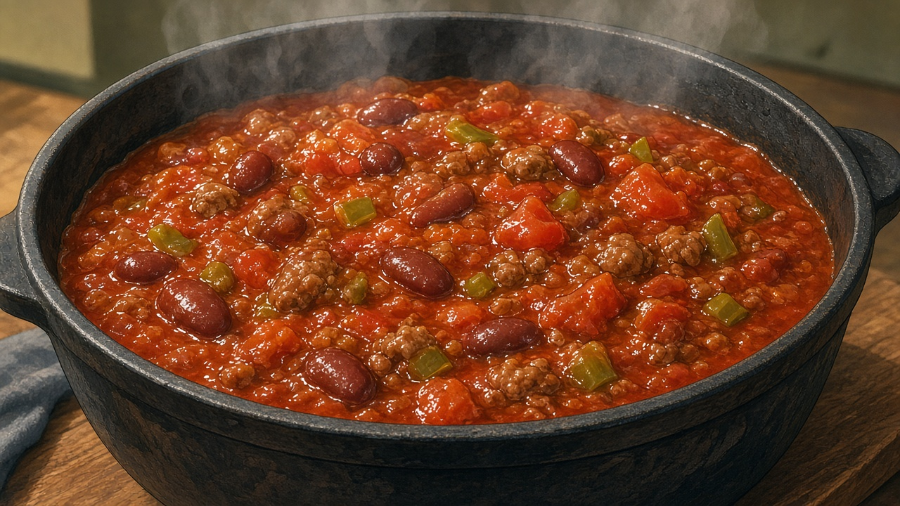
Kitchen anime plate
Chef says: Arkansas roots, Man in Black appetite. John Carter Cash put the family’s iron-pot chili in a cookbook — sirloin or venison, cornmeal to thicken. We tip our hat to Dyess Colony and cook our own pot.
From The Cash and Carter Family Cookbook and NPR conversations with John Carter Cash: Johnny’s chili was serious business — beef or venison, thickened with cornmeal, born for an iron pot. Home adaptation for your Dutch oven.
Cash family homage · Iron pot
Serves 6 to 8
Ingredients
2 lb sirloin or chuck, cubed (or venison)
2 Tbsp oil
2 onions, chopped
4 cloves garlic
3 Tbsp chili powder
1 Tbsp cumin
1 tsp oregano
1 tsp salt
1/2 tsp black pepper
1/4 tsp cayenne
1 can (28 oz) crushed tomatoes
2 cups beef broth
2 Tbsp cornmeal
1 Tbsp masa harina or extra cornmeal (optional)
Optional: 1 minced jalapeño
How you do it
Brown meat in oil in a Dutch oven in batches; set aside. Sauté onions; add garlic and spices 1 minute.
Return meat; add tomatoes and broth. Simmer covered 1½–2 hours until tender.
Stir cornmeal with a little water; add to pot to thicken; simmer 15 minutes more. Taste salt and heat. Serve with cornbread.
Secrets of the Kitchen
Brown hard for fond — gray steamed beef makes gray chili.
Cornmeal thickener is the Cash-family signature move; whisk slurry to avoid lumps.
Venison runs leaner — add a spoon of oil or bacon if using wild game.
Better next day; fat rises and flavors settle overnight.
June’s “Stuff” (Homage)
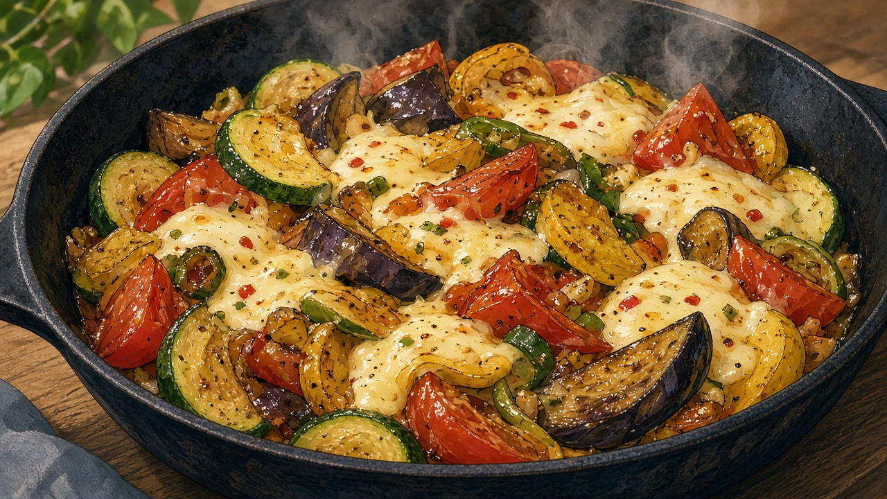
Kitchen anime plate
Chef says: June Carter’s ‘Stuff’ is fried potatoes and carrots meeting peppers, mushrooms, onion, and a hot-pepper cheese melt. NPR and the family cookbook said it plain — so we cook it plain and grateful.
June’s skillet ‘Stuff’ shows up in Cash family lore as a beloved jumble of fried vegetables crowned with spicy cheese. Weeknight food with Carter Family soul — homage, not a stage costume.
Carter table homage · Skillet Stuff
Serves 4
Ingredients
3 Tbsp oil or bacon fat
3 potatoes, diced
2 carrots, sliced thin
1 onion, sliced
1 bell pepper, sliced
8 oz mushrooms, sliced
Salt & pepper
1–2 cups shredded pepper jack or hot-pepper cheese
Optional: pinch of red pepper flakes
How you do it
Heat fat in a wide skillet. Fry potatoes and carrots with salt until browning and nearly tender, 12–15 minutes, stirring occasionally.
Add onion, pepper, mushrooms; cook until soft and savory. Season well.
Scatter cheese over top; cover 2–3 minutes until melted and gooey. Serve hot from the skillet.
Secrets of the Kitchen
Don’t stir potatoes constantly — let them sear for crust.
Mushrooms need room or they steam; add after potatoes have color.
Pepper jack melt is the ‘June’ note — mild cheddar won’t bring the same kick.
Cast iron holds the cheese lava longer at the table.
Paula Deen — Albany → Savannah
Southern connection: Albany, GA → Savannah; The Lady & Sons
Children, treat chef-celebrities like neighbors with cookbooks — tip the hat, cook the homage, don’t steal the restaurant’s soul. Gooey butter cake is her documented signature sweet.
Chef says: Savannah’s Lady put gooey butter cake on the map for a lot of living rooms, children. Cake-mix crust, cream-cheese custard top — sweet enough to make you hush. Homage to a documented signature, not a claim on her kitchen.
Paula Deen’s ooey gooey butter cake is a published signature (pauladeen.com lineage / Lady & Sons world) — St. Louis cousin by way of Savannah sweetness. Home bakers know the cream-cheese layer that stays gloriously under-set.
Savannah homage · Gooey center
Serves 12
Ingredients
CRUST: 1 box yellow cake mix
1 egg
1/2 cup melted butter
FILLING: 8 oz cream cheese, softened
2 eggs
1 teaspoon vanilla
16 oz powdered sugar (about 3½–4 cups)
1/2 cup melted butter
How you do it
Preheat oven to 350°F. Grease a 9×13 pan. Mix cake mix, 1 egg, 1/2 cup butter; press into pan.
Beat cream cheese; add eggs and vanilla; beat in powdered sugar and remaining butter until smooth. Spread over crust.
Bake 40–50 minutes until edges are set and golden but center still a bit gooey. Cool before cutting into squares.
Secrets of the Kitchen
Pull while the center jiggles — overbake and you lose the ‘gooey’ in the name.
Powdered sugar is the structure; don’t swap granulated or texture changes.
Cool completely for cleaner squares; warm gooey cake is delicious chaos.
Trisha Yearwood — Monticello, Georgia
Southern connection: Monticello, GA; Yearwood family cookbooks & Food Network
Children, Georgia kitchens raised singers who can also feed a crew. Trisha’s wild rice casserole energy — we honor the published family table, not the tour bus.
Chef says: Monticello, Georgia sent Trisha Yearwood out with family recipes and Food Network cameras. Wild rice casserole is weeknight church — creamy, hearty, no pretense. We cook our homage from the published tradition.
Chicken and wild rice casserole appears across Trisha Yearwood’s Home Cooking corpus / Food Network shares as family-table comfort. A home-kitchen adaptation with wild rice, chicken, and a creamy binder.
Georgia kitchen homage · Casserole night
Serves 6 to 8
Ingredients
2 cups cooked wild rice blend
3 cups cooked shredded chicken
1 can cream of mushroom soup
1 cup sour cream
1/2 cup chicken broth
1 onion, sautéed
1 cup sliced mushrooms, sautéed
1 cup shredded cheddar
1/2 teaspoon salt
1/2 teaspoon pepper
1 cup French-fried onions or buttered crumbs for topping
How you do it
Preheat oven to 350°F. Butter a 9×13 dish.
Mix rice, chicken, soup, sour cream, broth, onion, mushrooms, half the cheddar, salt, pepper. Spread in dish; top with remaining cheddar and fried onions/crumbs.
Bake 30–35 minutes until bubbly and golden.
Secrets of the Kitchen
Cook wild rice fully first — hard grains won’t soften in the casserole bake alone.
Sauté onions/mushrooms to drive off water so the casserole isn’t soupy.
Rest 10 minutes after baking for cleaner scoops.
Homage to Yearwood family/Food Network published style — not a verbatim reprint.
Reba McEntire — Southeastern Oklahoma
Southern connection: Chockie / SE Oklahoma (Southern Plains country culture)
Children, Reba’s chili is published history — we cook the homage, we don’t claim the spotlight. Spicy, chunky, Oklahoma-proud.
Documented: Hot ’n’ Spicy Chunky Beef Chili (Oklahoma Celebrity Cookbook 1991). Poke salad also published — skip here (toxin handling). Strength: Moderate–Solid for chili.
Hot ’n’ Spicy Chunky Beef Chili (Reba Homage)
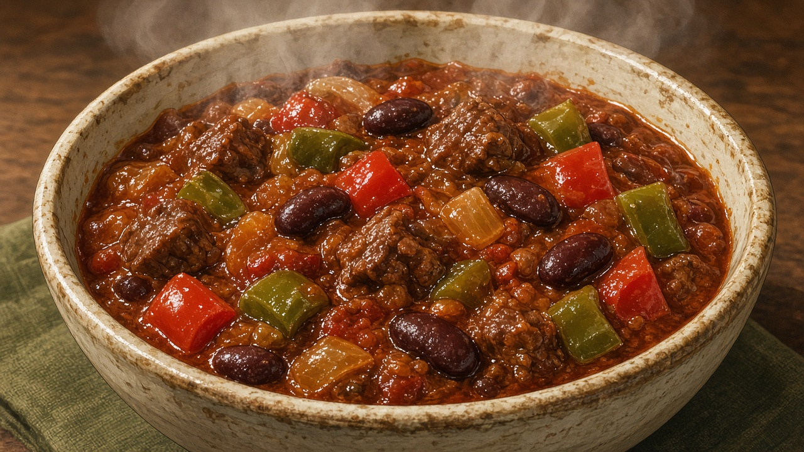
Kitchen anime plate
Chef says: Oklahoma’s Reba put a beanless chuck chili in a celebrity cookbook back when print was king. Chunky, spicy, no beans arguing in the pot — that’s the documented lane. We tip the red hair and simmer our own.
Reba McEntire’s Hot ’n’ Spicy Chunky Beef Chili from the Oklahoma Celebrity Cookbook (1991) has been widely reprinted — beanless chuck chili with heat. Home homage for a Dutch oven and a cold night.
Oklahoma homage · Beanless & bold
Serves 6 to 8
Ingredients
3 lb beef chuck, cut in 1/2-inch cubes
2 Tbsp oil
2 onions, chopped
4 cloves garlic
1/4 cup chili powder
1 Tbsp cumin
1 tsp oregano
1 tsp salt
1/2–1 tsp cayenne
1 can (28 oz) diced tomatoes
1 can (15 oz) tomato sauce
1 cup beef broth
1 green bell pepper, chopped
Optional: 1 minced jalapeño
How you do it
Brown chuck in oil in batches; set aside. Sauté onions; add garlic and spices until fragrant.
Return beef; add tomatoes, sauce, broth, peppers. Simmer partly covered 2–2½ hours until beef is tender and chili thick.
Taste heat and salt. Serve with cornbread, cheddar, onions — still no beans unless you rebel.
Secrets of the Kitchen
Chuck needs time — under-simmered cubes stay chewy; wait for fork-tenderness.
Bloom chili powder in fat before liquids for deeper flavor.
Beanless means reduce until thick; don’t drown early with too much broth.
Heat builds overnight — go easier on cayenne day one if serving kids.
Jimmy Carter — Plains, Georgia
Southern connection: Plains, GA; peanut farmer; White House Southern menus
Children, plain Southern food raised a president. Cheese ring on the buffet, grits in the lore — we cook Rosalynn’s documented party ring as homage, not a White House claim.
Documented: Plains Special Cheese Ring (Rosalynn); Southern staples — grits, fried chicken, greens, country ham, Friday fish fries (SFA / press). Strength: Solid for cheese ring + staples.
Plains Special Cheese Ring (Carter Homage)
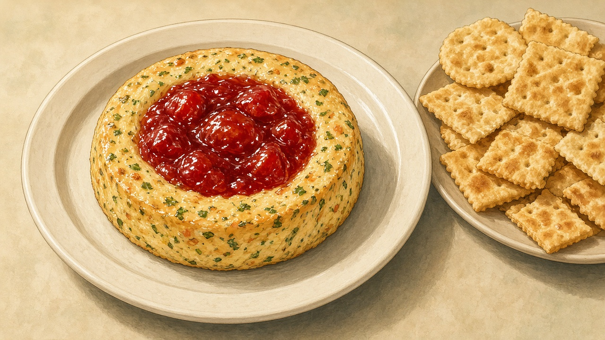
Kitchen anime plate
Chef says: Plains, Georgia — peanuts, porch talk, and Rosalynn’s cheese ring with strawberry preserves in the middle. National Archives and Southern Living kept the recipe famous. Children, that’s presidential potluck energy.
The Plains Special Cheese Ring — cheddar, mayo, pecans, onion, strawberry preserves in the center — is Rosalynn Carter’s documented party classic (National Archives / Southern Living / Taste of Home reprints). A cold appetizer with Georgia manners.
Plains, GA homage · Preserve center
Serves a party (10–12 as appetizer)
Ingredients
1 lb sharp cheddar, finely grated
1 cup mayonnaise
1 cup chopped pecans
1 small onion, grated or minced fine
Black pepper to taste
Dash of cayenne
Strawberry preserves for the center
Crackers or toast points
How you do it
Mix cheddar, mayo, pecans, onion, pepper, and cayenne until a moldable paste.
Pack into a ring mold or shape a wreath on a plate; chill at least 2 hours until firm.
Unmold; fill the center with strawberry preserves. Serve with crackers.
Secrets of the Kitchen
Grate cheddar fine so the ring binds; coarse shreds crumble.
Chill hard — warm cheese ring slumps into regret.
Onion should be tiny; big pieces overwhelm and weep water.
Preserves in the center aren’t garnish theater — the sweet-salty contrast is the point.
Bill Clinton — Hope / Hot Springs, Arkansas
Southern connection: Hope / Hot Springs; Little Rock governor’s mansion
Children, we cook history with timestamps. Mild ribs for the mansion years — documented by the cook who fed him. No claim he still eats ’em every Friday.
Chef says: Children, note the era — campaign-trail and governor’s-mansion Bill loved mild barbecue ribs, per longtime Little Rock cook Liza Ashley. Later came health turns and different plates. This homage is the mild ’90s Arkansas table, not a medical prescription.
Liza Ashley (Seattle Times 1993 and mansion lore) pointed to mild-sauced barbecue pork ribs among Clinton favorites of that era. Home oven ribs with a gentle tomato-brown sugar glaze — Arkansas comfort, labeled honestly.
Arkansas ’90s homage · Mild glaze
Serves 4 to 6
Ingredients
2 racks pork baby back or spare ribs (~4 lb)
2 Tbsp paprika
1 Tbsp brown sugar
1 Tbsp salt
1 tsp black pepper
1 tsp garlic powder
1/2 tsp chili powder (mild)
SAUCE: 1 cup ketchup
1/3 cup brown sugar
1/4 cup apple cider vinegar
1 Tbsp Worcestershire
1 tsp mustard
1/2 tsp smoked paprika
Pinch cayenne (optional, keep mild)
How you do it
Rub ribs with spice mix; rest 1 hour or overnight.
Oven method: 300°F on a foil-lined sheet, meaty side up, loosely tented with foil, 2½–3 hours until tender. Unwrap last 20 minutes.
Warm sauce ingredients. Brush ribs; broil or bake 5–10 minutes to set glaze. Rest 10 minutes; slice.
Keep sauce mild — heat on the side for guests who want it.
Secrets of the Kitchen
Low oven + foil tent mimics smoker tenderness without a pit.
Mild means restrain cayenne — Ashley’s note was mild sauce; honor that for the homage.
Sauce late so sugar doesn’t burn during the long cook.
Label this ’90s/mansion-era favorite; Clinton’s later plant-based turn is a different chapter.
Oprah Winfrey — Kosciusko, Mississippi roots
Southern connection: Born Kosciusko, MS; Southern food identity via roots + chef Art Smith
Children, when the most famous interviewer alive says cornbread and peas are the favorite meal, you listen — then you cook your own pot with respect.
Documented: cornbread + black-eyed peas as favorite meal (birthday coverage); hot-water cornbread for Stedman; Art Smith buttermilk fried chicken for her 50th. Strength: Solid for peas/cornbread.
Chef says: Miss Oprah called cornbread and black-eyed peas her favorite meal around her 64th birthday — People, E!, the whole gossip choir. Mississippi roots on a plate. We cook the homage; she keeps the mic.
Oprah Winfrey (Kosciusko, MS roots) publicly named cornbread and black-eyed field peas a favorite meal. Hot-water cornbread for Stedman also appears in coverage. This plate is a home homage to that documented pairing — plus pot liquor vibes.
Mississippi roots homage · Birthday plate
Serves 4 to 6
Ingredients
PEAS: 1 lb dried black-eyed peas, soaked
1 smoked turkey wing or ham hock
1 onion
2 cloves garlic
6 cups water/stock
1 bay leaf
Salt, pepper, pinch of red pepper flakes
1 tsp vinegar at end
CORNBREAD: use Cast-Iron Cornbread (Part II) or Everyday Love Quick Cornbread (Part I)
How you do it
Simmer peas with smoked meat, onion, garlic, bay, and water until creamy-tender, 1–1½ hours. Season late with salt; finish with vinegar and pepper flakes.
Bake your cornbread of choice while peas finish.
Serve peas in bowls with pot liquor; cornbread on the side for dunking. Rosé optional — she mentioned it.
Secrets of the Kitchen
Salt peas late — early salt + old peas can stay hard.
Smoked turkey keeps the pot soulful without turning it into pure salt pork.
A teaspoon of vinegar at the end brightens earthiness.
Cornbread is the utensil; make enough for dunking and second helpings.
Tyler Perry — New Orleans → Atlanta
Southern connection: New Orleans born; Atlanta studios; Southern Black church/food culture
Children, empire builders still eat breakfast. Grits and eggs — he said it; we cook it as homage, then get back to work.
Documented: grits & eggs quote; mac & cheese / greens / yams / fried chicken associations; Art Smith ‘Tyler’s Rolls.’ Strength: Moderate–Solid.
Grits & Eggs Breakfast (Tyler Homage)
Kitchen anime plate
Chef says: Tyler Perry said it himself — he loves a good breakfast, grits and eggs. New Orleans born, Atlanta building empire, still talking about morning bowls. Homage plate, children — simple and right.
Quoted love for grits and eggs sits beside broader Southern comfort (mac & cheese, greens, yams) in coverage of Perry’s tastes and Art Smith restaurant nods. This is the breakfast homage: creamy grits, soft eggs, maybe a little cheese.
Atlanta breakfast homage · Grits first
Serves 2 to 4
Ingredients
1 cup grits
4 cups water
1/2 tsp salt
2 Tbsp butter
1/2 cup shredded cheddar (optional)
4–6 eggs
Black pepper
Hot sauce
Optional: crumbled bacon or sausage
How you do it
Cook grits in salted water until creamy; finish with butter and cheese. Keep warm.
Cook eggs your way — sunny-side, scrambled soft, or over-easy.
Spoon grits into bowls; top with eggs, pepper, hot sauce, and meat if using.
Secrets of the Kitchen
Whisk grits early to kill lumps; low simmer after.
Soft eggs — rubbery eggs shame good grits.
Cheese optional but on-brand for Southern breakfast bowls.
Documented as a quoted favorite breakfast — not a formal Perry cookbook recipe.
Beyoncé — Houston, Texas
Southern connection: Houston; Knowles family; Frenchy’s as hometown soul-food anchor
Children, we celebrate Houston pride without stealing restaurant secrets. Fried chicken plate inspired by where she eats — our skillet, our beans, clear label.
Documented: Frenchy’s loyalty / orders described in press; later Houston catering soul plates. Strength: Solid for restaurant loyalty; dish list from press — not a personal cookbook.
Chef says: Listen carefully, children — Beyoncé’s Houston love for Frenchy’s is documented. We are NOT cooking Frenchy’s secret formula. We’re making a home fried-chicken plate inspired by the soul-food spread the press says shows up around that loyalty: chicken, red beans & rice, greens, cornbread. Homage. Period.
Coverage (People, Eater Houston, Tina Knowles / Harvey relief context) ties Beyoncé to Frenchy’s Chicken in Houston. Typical order attributions include fried chicken, red beans & rice, fries, greens, cornbread, lemon pound cake. This is a home-kitchen inspired plate — not a proprietary restaurant recipe.
Houston homage · NOT a proprietary recipe
Serves 4
Ingredients
FRIED CHICKEN: use Buttermilk Fried Chicken method (Part II) with a pinch of Creole seasoning in the flour
RED BEANS: 1 lb red kidney beans, soaked
1 onion
1 green pepper
2 celery ribs
3 garlic cloves
1 smoked sausage link, sliced
1 bay leaf
1 tsp thyme
Salt, pepper, cayenne
Cooked white rice
SIDES: collards or simple sautéed greens; cornbread from Part I or II
How you do it
Season and fry chicken per Part II method; keep warm on a rack.
For red beans: sauté trinity + sausage; add beans, bay, thyme, water to cover by 2 inches. Simmer until creamy, 1½–2 hours, mashing some beans for body. Season; serve over rice.
Plate: chicken, red beans & rice, greens, cornbread. Lemon pound cake if you’re feeling Houston bakery energy — your recipe, not theirs.
Secrets of the Kitchen
LEGAL/TONE: Do not claim this is Frenchy’s recipe — it isn’t.
Creole seasoning in the dredge nods Houston/Louisiana Gulf flavor without copying a chain formula.
Mash a cup of beans against the pot wall for natural creaminess — no need for cream.
Restaurant loyalty ≠ published cookbook; keep language as ‘inspired by documented favorite spot.’
Brett Favre — Kiln / Gulfport, Mississippi
Southern connection: Gulfport / Kiln, MS
Children, sometimes one family pot is enough fame. Jambalaya from the Favre table — we cook the homage and leave the playbook alone.
Documented: family jambalaya (Parade / circulated family recipe). Strength: Moderate–Solid for one signature.
Favre Family Jambalaya (Homage)
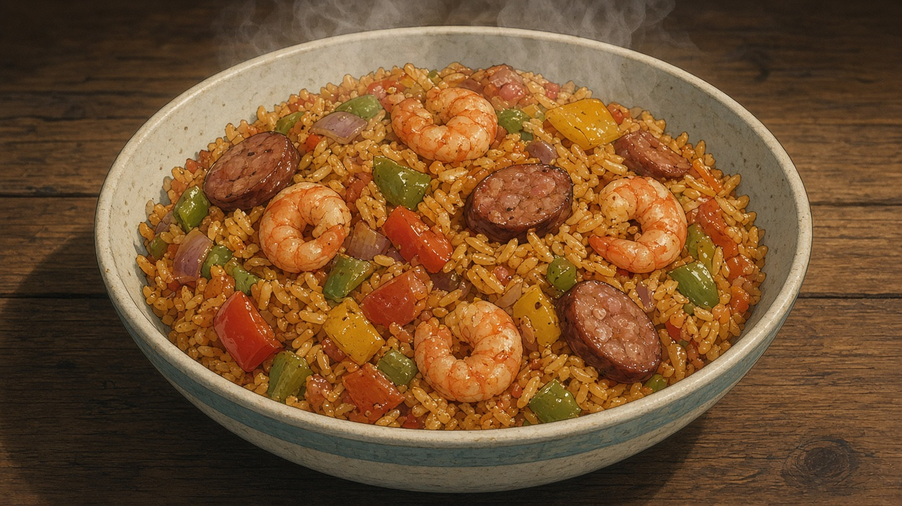
Kitchen anime plate
Chef says: Kiln, Mississippi sent a quarterback and a family jambalaya that Parade and the internet kept circulating — chicken, shrimp, ham, andouille, peppers, tomato, rice. One solid signature. We cook that one and don’t invent a whole Favre menu.
Brett Favre’s family jambalaya has been widely published as a Parade/family recipe: a tomato-forward pot with mixed meats and shrimp. Home Dutch-oven homage for game day or any day Gulf Coast nostalgia hits.
Mississippi Gulf homage · One signature pot
Serves 8
Ingredients
2 Tbsp oil
1 lb andouille, sliced
1 lb chicken thighs, cubed
8 oz ham, diced
1 onion
1 green pepper
2 celery ribs
4 garlic cloves
1 can (14 oz) diced tomatoes
2 Tbsp tomato paste
3 cups chicken broth
2 cups long-grain rice
1 lb shrimp, peeled
2 tsp Cajun seasoning
2 bay leaves
Salt, pepper
Green onions
How you do it
Brown andouille, then chicken, then ham in oil; set meats aside. Sauté trinity until soft; add garlic, Cajun seasoning, tomato paste 1 minute.
Add tomatoes, broth, bay, rice, and meats. Bring to boil; cover and simmer low 20–25 minutes until rice tender.
Stir in shrimp; cover 5–7 minutes until pink. Rest 5 minutes; fluff; top with green onions.
Secrets of the Kitchen
Brown meats for fond — flavor lives on the pot bottom.
Don’t lift the lid every minute or rice cooks unevenly.
Shrimp last — they need minutes, not the whole rice cook.
Only feature this documented family jambalaya; don’t invent extra ‘Favre favorites.’
Reese Witherspoon — New Orleans / Nashville
Southern connection: Born New Orleans; raised Nashville; Whiskey in a Teacup Southern hosting
Children, hosting books are love letters to the table. Cornbread chili pie — we bake our homage from the published Southern entertaining lane.
Documented: Cornbread Chili Pie, Mississippi Mud Trifle, fried chicken & BBQ notes in Whiskey in a Teacup. Strength: Solid.
Cornbread Chili Pie (Reese Homage)
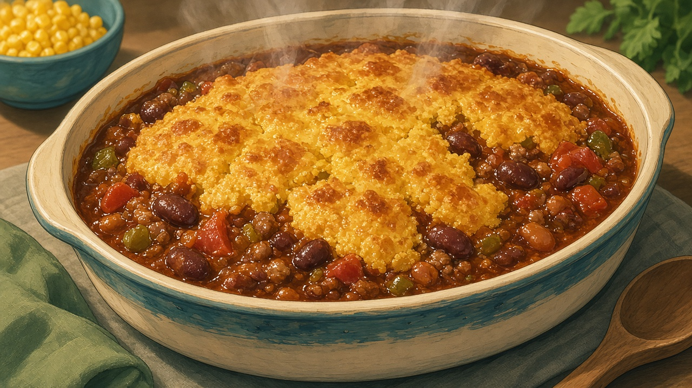
Kitchen anime plate
Chef says: Reese Witherspoon’s Whiskey in a Teacup put Southern hosting in hardcover — including cornbread chili pie. Nashville-raised, New Orleans-born. We bake the homage in a skillet or casserole and pour sweet tea.
Cornbread Chili Pie from Whiskey in a Teacup (tested widely by Kitchn/Delish types) layers chili with a cornbread lid — weeknight Southern casserole energy with Reese’s entertaining stamp. Home adaptation.
Whiskey in a Teacup homage · Chili under gold
Serves 6 to 8
Ingredients
1 lb ground beef or half beef/pork
1 onion, diced
2 cloves garlic
1 can (15 oz) chili beans or kidney beans
1 can (14 oz) diced tomatoes
2 Tbsp chili powder
1 tsp cumin
1 cup corn kernels
1 cup shredded cheddar
Salt & pepper
TOP: 1 box Jiffy corn muffin mix + ingredients called for (egg, milk) OR homemade cornbread batter for one skillet
How you do it
Preheat oven to 400°F. Brown meat with onion; add garlic, spices, tomatoes, beans, corn; simmer 10 minutes. Season; stir in half the cheddar. Spread in a 9×13 or deep skillet.
Mix cornbread batter; pour over chili; sprinkle remaining cheddar.
Bake 20–25 minutes until cornbread is golden and set. Rest 10 minutes.
Secrets of the Kitchen
Simmer chili thick before topping — watery chili makes soggy cornbread.
Don’t overmix Jiffy batter; lumps are fine.
Rest so the layers set for scooping instead of lava slide.
Homage to a published lifestyle-cookbook dish — not an endorsement deal.
Matthew McConaughey — Uvalde / Longview, Texas
Southern connection: Uvalde / Longview, TX
Children, Texas casseroles don’t need a red carpet. King Ranch on a weeknight — homage to a documented McConaughey favorite.
Documented: King Ranch chicken casserole; Opie’s BBQ jalapeño sausage with spicy corn. Strength: Solid for those staples.
King Ranch Chicken Casserole (McConaughey Homage)
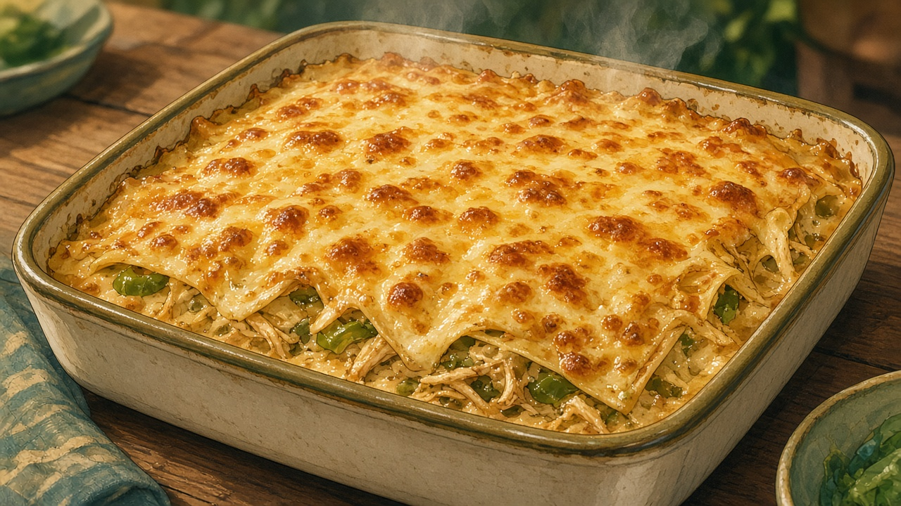
Kitchen anime plate
Chef says: Alright, alright, alright — Texas tables love King Ranch casserole, and Matthew McConaughey’s been tied to it on Diners, Drive-Ins and Dives / Monument Cafe talk. Homage ‘caschiladas,’ children. No trademark on the drawl.
King Ranch chicken — tortillas, chicken, peppers, creamy tomato-chili gravy, cheese — is a Texas church-supper classic McConaughey has publicly enjoyed (DDD / Texas Monthly orbit). Home casserole homage.
Texas homage · Caschilada energy
Serves 6 to 8
Ingredients
3 cups cooked shredded chicken
12 corn tortillas, torn or quartered
1 onion, diced
1 red bell pepper, diced
1 can Ro-Tel tomatoes with green chilies
1 can cream of mushroom soup
1 can cream of chicken soup
1 cup chicken broth
2 cups shredded cheddar-Jack blend
1 tsp chili powder
1/2 tsp cumin
Oil
Salt & pepper
Cilantro optional
How you do it
Preheat oven to 350°F. Sauté onion and pepper in oil until soft. Stir in Ro-Tel, soups, broth, chili powder, cumin; warm into a sauce. Season.
In a greased 9×13, layer tortillas, chicken, sauce, cheese; repeat. End with sauce and cheese.
Bake 30–35 minutes until bubbly. Rest 10 minutes; cilantro if you like.
Secrets of the Kitchen
Briefly dip tortillas in warm sauce so they don’t stay cardboard-dry.
Ro-Tel brings the Texas tang; mild vs hot is your call.
Rest before cutting or it serves as soup with chips.
Documented McConaughey favorite lane — home adaptation of a statewide classic.
Willie Nelson — Abbott, Texas
Southern connection: Abbott, TX; outlaw country / Texas identity
Children, if Willie can eat waffles almost every day, you can heat the iron on a Saturday. CFS optional but recommended. Homage only.
Documented: waffles ‘almost every day’ (Annie Nelson); CFS often paired in food coverage. Strength: Solid for waffles/CFS habit.
Chicken-Fried Steak & Waffles (Willie Homage)
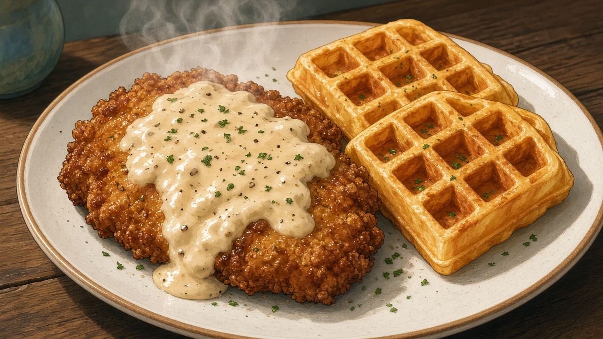
Kitchen anime plate
Chef says: Willie never met a waffle he didn’t like — Annie’s been on waffle duty, and chicken-fried steak rides shotgun in the coverage. Abbott, Texas outlaw breakfast. Homage plate. On the road again… to the skillet.
Willie Nelson’s waffle habit is well attested (Annie Nelson; Allrecipes/Whiskey Riff coverage; cannabis cookbook context). Chicken-fried steak often pairs in secondary food coverage. CFS + waffles is the homage breakfast of champions who nap after.
Abbott, TX homage · Waffles almost every day
Serves 4
Ingredients
CFS: 4 cube steaks
1 cup flour
1 tsp paprika
1 tsp salt
1 tsp black pepper
1/2 tsp garlic powder
2 eggs + 1/4 cup milk
Oil for frying
GRAVY: 3 Tbsp drippings
3 Tbsp flour
2 cups milk
Salt & lots of pepper
WAFFLES: your favorite mix or 2 cups flour, 2 Tbsp sugar, 1 Tbsp baking powder, 1/2 tsp salt, 2 eggs, 1¾ cups milk, 1/3 cup melted butter
How you do it
Season flour. Dredge steaks in flour, egg wash, flour again. Fry in 1/4-inch oil ~350°F until golden, 3–4 min/side. Keep warm.
Pour off all but 3 Tbsp fat; whisk flour; add milk for pepper gravy.
Cook waffles. Plate waffle, CFS, gravy over both — syrup on the side for the sweet school of thought.
Secrets of the Kitchen
Dry steaks well before dredging so crust sticks.
Double dredge = CFS crust; single dredge is just sad steak.
Gravy wants aggressive black pepper — Willie’s Texas table energy.
Waffle iron hot and greased; first waffle is the sacrifice pancake of destiny.
Loretta Lynn — Butcher Holler, Kentucky
Southern connection: Butcher Holler, KY (Appalachian South)
Children, coal-country cooking doesn’t need rhinestones. Loretta wrote it down — we simmer the homage and thank the holler.
Documented: chicken & dumplings, biscuits, fudge, peanut brittle in You’re Cookin’ It Country. Strength: Solid.
Appalachian Chicken & Dumplings (Loretta Homage)
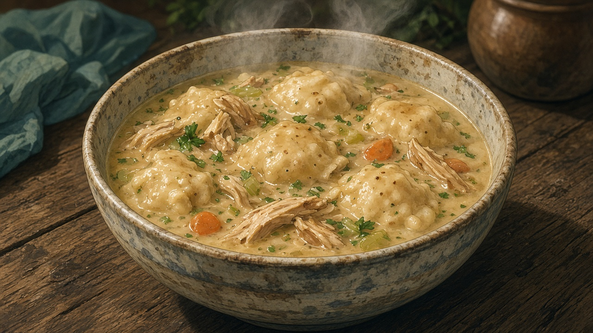
Kitchen anime plate
Chef says: Butcher Holler raised Loretta Lynn on real country cooking — her cookbook You’re Cookin’ It Country put chicken and dumplings in print. We honor the holler with our own pot. Fan homage, children.
Loretta Lynn’s You’re Cookin’ It Country collects Appalachian favorites including chicken and dumplings, biscuits, and sweets. This pot leans holler-style: stewed bird, flat dumplings, black pepper. Separate from Dolly’s East Tennessee pot — same love, different hollow.
Butcher Holler homage · Country cooking
Serves 6
Ingredients
3 lb bone-in chicken pieces
9 cups water
1 onion
2 carrots
2 celery
Salt, pepper, bay
DUMPLINGS: 2 cups flour
1 tsp salt
1/4 cup lard or shortening
2/3 cup cold water or buttermilk
Butter to finish
Parsley
How you do it
Stew chicken with aromatics until falling off bone; shred; strain and season broth.
Make stiff dumpling dough; roll thin; cut squares. Simmer in broth covered ~15 minutes.
Return chicken; butter; heavy pepper. Serve in deep bowls.
Secrets of the Kitchen
Lard in dumplings is old-holler texture — shortening works if that’s what’s in the tin.
Broth from bones beats broth from nowhere — use the carcass.
Keep Dolly’s and Loretta’s chapters distinct in your mind: both dumplings, both documented, both homage.
Published cookbook inspiration — not a stage costume.
Children, when a legend puts chicken and waffles on the marquee, the home cook can still tip the hat from a waffle iron in pajamas.
Documented: Chicken & Waffles restaurant brand; Southern sides on menus; crunchy/juicy chicken preference in press. Strength: Solid as food-business signature.
Chicken & Waffles (Gladys Knight Homage)
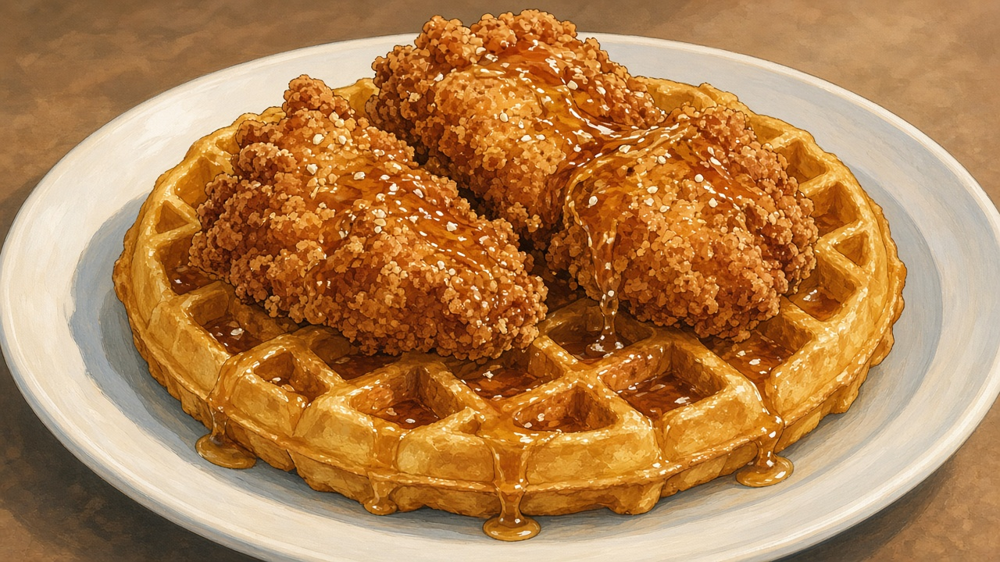
Kitchen anime plate
Chef says: Gladys Knight put her name on chicken-and-waffles restaurants — Atlanta soul with a midnight-breakfast passport. We fry and iron at home as homage to that signature brand energy, not as a secret-menu steal.
Gladys Knight (and Ron Winans) Chicken & Waffles made the pairing a restaurant signature across Atlanta and beyond; coverage notes she likes fried chicken crunchy outside, juicy in. Home plate homage with buttermilk bird and crisp waffles.
Atlanta soul homage · Crunchy & golden
Serves 4
Ingredients
Buttermilk fried chicken pieces (Part II method) — wings/tenders work great
WAFFLES: 2 cups flour
1 Tbsp sugar
1 Tbsp baking powder
1/2 tsp salt
2 eggs
1¾ cups milk
1/3 cup melted butter
1 tsp vanilla
Butter, maple syrup, hot sauce, powdered sugar optional
How you do it
Fry chicken; hold on a wire rack in a warm oven.
Mix waffle batter; cook until deep golden and crisp.
Plate waffle + chicken; butter, warm syrup, dash of hot sauce if you walk both lanes.
Secrets of the Kitchen
Crisp chicken on a rack — soggy chicken beside waffles is a tragedy.
Waffles slightly underdone stay soft; cook the extra 30 seconds for crunch that stands up to syrup.
Hot sauce + maple is the soul-brunch handshake.
Restaurant-brand signature — home homage, not claiming Gladys’s kitchen formulas.
Aretha Franklin — Memphis roots
Southern connection: Born Memphis, TN; Detroit career; iconic soul-food fame
Children, respect the Queen. We cook greens and hot-water cornbread as the welcome plate — and we tell the chitlins truth carefully, without turning supper into a dare.
Documented: chitlins as 1967 Ebony favorite; later health ‘cancellation’ (NPR 2008); greens / hot-water cornbread / baked chicken associations. Strength: Solid attribution; handle thoughtfully.
Hot-Water Cornbread & Greens (Aretha Homage)
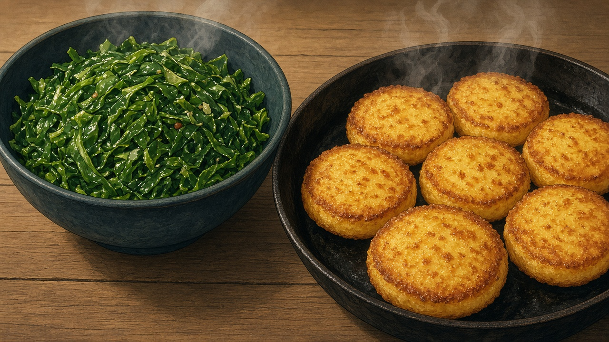
Kitchen anime plate
Chef says: Careful now, children. Aretha Franklin named chitlins a favorite in 1967 Ebony — later she said she’d canceled them for health (NPR). We honor the Queen of Soul with an approachable plate: hot-water cornbread and greens. Chitlins stay in the history books unless you already know that work.
Aretha (Memphis-born) is tied in coverage to classic soul plates — greens, hot-water cornbread, baked chicken — alongside the famous chitlins attribution. This homage leads with hot-water cornbread and pot greens: respectful, home-cookable, culturally grounded without demanding specialty offal work.
Queen of Soul homage · Approachable plate
Serves 4 to 6
Ingredients
GREENS: 2 bunches mustard or collard greens
1 smoked turkey wing
1 onion
Salt, pepper, vinegar, pepper flakes
HOT-WATER CORNBREAD: 2 cups fine cornmeal
1 tsp salt
1½ to 2 cups boiling water
Oil for frying
How you do it
Simmer greens with smoked turkey and onion until tender; season with salt, vinegar, flakes.
Stir boiling water into cornmeal and salt until a soft dough forms you can shape. Pat into small cakes.
Fry in 1/4-inch oil until deep golden each side. Drain; serve with greens and pot likker.
Optional historical note at the table: chitlins were a documented Aretha favorite in earlier years — cook them only if you know proper cleaning and long boiling food-safety practice.
Secrets of the Kitchen
Boiling water gelates the cornmeal — that’s what binds without eggs/flour.
Shape gently; too much water = batter that falls apart in oil.
Fry hot enough to crust quickly or cakes absorb grease.
SENSITIVITY: Lead with cornbread & greens; treat chitlins as cultural/historical footnote, not a mandatory recipe.
Fats Domino — New Orleans
Southern connection: New Orleans, Louisiana
Children, the Fat Man kept New Orleans in a pot on the road. Red beans homage — piano not included.
Documented: red beans & pig’s feet on the road (NOLA.com); brief fried-chicken franchise footnote. Strength: Solid for red beans habit.
Red Beans & Rice (Fats Domino Homage)
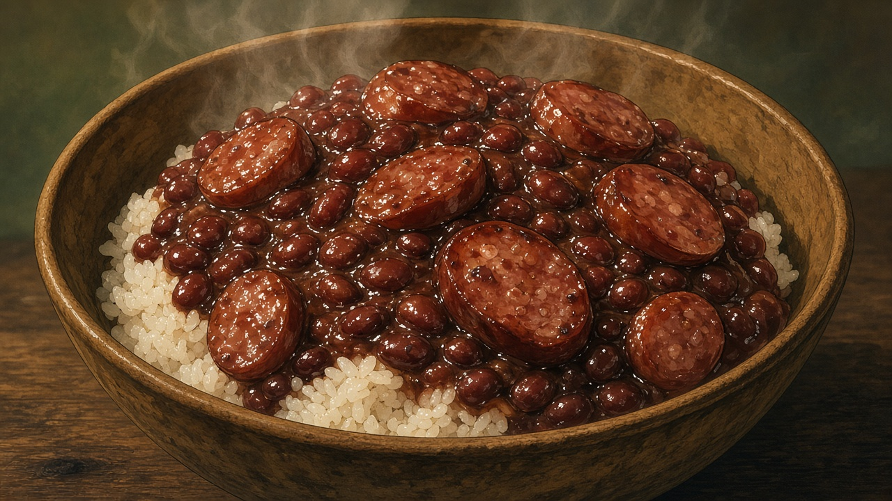
Kitchen anime plate
Chef says: Fats Domino cooked red beans and pig’s feet on a hot plate while traveling — New Orleans never left the man. Monday beans tradition, children. Homage pot. Rice on the side like the city taught us.
NOLA.com profiles and obituaries recalled Fats Domino’s habit of red beans and pig’s feet on the road; he also briefly lent his name to a fried-chicken franchise. Feature the Monday red beans — home adaptation of a documented habit.
New Orleans homage · Monday beans
Serves 6 to 8
Ingredients
1 lb dried red kidney beans, soaked overnight
1 lb smoked sausage or andouille, sliced
Optional: 1–2 pig’s feet, cleaned (traditional Domino note) OR smoked ham hock
1 onion
1 green pepper
2 celery ribs
4 garlic cloves
2 bay leaves
1 tsp thyme
1/2 tsp cayenne
Salt & black pepper
Cooked long-grain rice
Green onions
How you do it
Sauté trinity and sausage; add garlic. Add beans, bay, thyme, cayenne, and water/stock to cover by 2 inches. Add pig’s feet or hock if using.
Simmer 2–3 hours until beans creamy, stirring and adding water as needed. Mash some beans for body. Season late with salt.
Serve over rice with green onions. French bread optional but correct.
Secrets of the Kitchen
Monday red beans used Sunday ham bone historically — any smoked bone helps.
Creaminess comes from time + mashing, not cream.
Pig’s feet are optional authenticity; ham hock is the easier grocery-store cousin.
Documented travel habit + NOLA identity — not a franchise secret recipe.
Emeril Lagasse — New Orleans culinary identity
Southern connection: Massachusetts-born; New Orleans culinary identity; Emeril’s NOLA
Children, chef-celebrities publish their hits for a reason. BBQ shrimp homage — bread in hand, pepper on the tongue.
Chef says: Bam — carefully. Emeril’s New Orleans barbecue shrimp is butter, Worcestershire, pepper, and French bread for pushing. Chef-celebrity territory with published recipes. We cook a home homage and say thank you to NOLA.
Emeril Lagasse’s BBQ shrimp (emerils.com lineage) is head-on shrimp in a peppery butter-Worcestershire sauce — not tomato BBQ. Sop with French bread. Home skillet homage to a documented signature.
NOLA chef homage · Butter & pepper
Serves 4 as entrée / 6 as appetizer
Ingredients
2 lb large head-on shrimp (or peeled if needed)
2 sticks unsalted butter
2 Tbsp olive oil
8–10 garlic cloves, minced
2 Tbsp Worcestershire
2 Tbsp fresh lemon juice
2 tsp cracked black pepper (or more)
1 tsp paprika
1/2 tsp cayenne
1/2 tsp salt
2 tsp Emeril-style Essence or Creole seasoning
1/4 cup beer or shrimp stock (optional)
Chopped parsley
Warm French bread
How you do it
In a wide skillet, melt butter with oil; cook garlic 1 minute. Add Worcestershire, lemon, spices, and beer/stock; simmer 2–3 minutes.
Add shrimp; cook until just pink and cooked through, 4–7 minutes depending on size. Don’t overcook.
Sprinkle parsley; serve in bowls with sauce and piles of French bread.
Secrets of the Kitchen
Head-on shrimp enrich the sauce — peel-at-table is part of the ritual.
Cracked black pepper is the backbone; pre-ground dust won’t do the same job.
Sauce should be emulsified and spoonable — whisk butter in off extreme heat if it breaks.
Published chef signature — home homage; ‘Bam’ optional and restrained.
Chef says: Miss Leah Chase fed Civil Rights and Creole soul at Dooky Chase’s. Gumbo Z’Herbes — green gumbo for Holy Thursday — is her documented glory. We offer a simplified home homage with many greens, not a museum replica of nine sacred counts. Respect the Queen of Creole Cuisine.
Leah Chase’s Gumbo Z’Herbes (The Dooky Chase Cookbook; TODAY shares) traditionally uses many greens and meats for Holy Thursday. This simplified home version keeps the green spirit: collards, mustard, turnip, spinach, smoked meat, filé optional — weeknight-possible reverence.
Dooky Chase homage · Green gumbo simplified
Serves 8
Ingredients
2 Tbsp oil
1 onion
1 green pepper
2 celery ribs
4 garlic cloves
1 ham hock or smoked turkey + 8 oz stew beef or hot sausage (optional meats)
2 bunches collards
1 bunch mustard greens
1 bunch turnip greens
1 bag spinach
10 cups water/stock
2 bay leaves
1 tsp thyme
1 Tbsp Worcestershire
Salt, pepper, cayenne
Cooked rice
Filé powder at table (optional)
How you do it
Wash greens thoroughly; chop. Sauté trinity in oil; add garlic. Add meats and stock; simmer 30 minutes.
Add greens in handfuls with bay and thyme; simmer 1–1½ hours until silky and deep green-brown. Season; splash Worcestershire.
Serve over rice. Filé at the table if you like — don’t boil filé hard in the pot.
Secrets of the Kitchen
Wash greens like Leah would judge you — grit is disrespect.
Simplified ≠ careless: still use multiple greens for the ‘z’herbes’ character.
Filé off heat or at table; boiling filé can string.
Holy Thursday tradition traditionally aims for odd numbers of greens — home cooks may approximate with what’s fresh.
Edna Lewis — Freetown, Virginia
Southern connection: Freetown, VA; Grande Dame of Southern cooking; The Taste of Country Cooking
Children, before Southern food was a brand, Edna Lewis wrote it as seasons and neighbors. We fry chicken as homage to that grace.
Documented: seasonal Virginia country cooking; pan-fried chicken; biscuits; preserved foods (Taste of Country Cooking). Strength: Solid.
Southern Pan-Fried Chicken (Edna Lewis Homage)
Kitchen anime plate
Chef says: Edna Lewis — Grande Dame of Southern cooking, Freetown, Virginia. The Taste of Country Cooking taught a nation that seasonal farm cooking was high art. Pan-fried chicken in lard and butter is homage to that teaching, children — not a photocopy of every page.
Edna Lewis’s Virginia country cooking centered seasonality, careful frying, and respect for ingredients. Pan-fried chicken associated with her teaching often uses good fat, unhurried browning, and buttermilk or careful seasoning. Home cast-iron homage.
Freetown, VA homage · Grande Dame
Serves 4 to 6
Ingredients
1 chicken, cut up
2 cups buttermilk
2 tsp salt
1½ cups flour
1 tsp black pepper
1 tsp paprika
Lard, shortening, or half butter/half oil for frying (~1 inch depth)
How you do it
Soak chicken in buttermilk and 1 tsp salt 2–4 hours. Drain.
Season flour with remaining salt, pepper, paprika. Dredge chicken; rest 10 minutes.
Heat fat to ~325°F in cast iron. Fry skin-side down without crowding; turn when deep golden. Cook to 165°F interior. Drain on a rack.
Serve with seasonal vegetables and biscuits if you’re walking fully in her country-cooking light.
Secrets of the Kitchen
Lard/butter flavor is part of the old Virginia pan-fry character — all-vegetable oil works but tastes different.
Don’t rush the browning; Lewis’s cooking is patience food.
Rest dredged chicken so coating adheres.
Homage to a foundational author’s tradition — seasonal sides honor her as much as the bird.
Children, Cajun cooking came into living rooms with a laugh and a cast-iron truth. Dirty rice homage — season it like you mean it.
Documented: dirty rice, okra gumbo, crawfish étouffée across Justin Wilson cookbooks/TV. Strength: Solid as Cajun media cook.
Dirty Rice (Justin Wilson Homage)
Kitchen anime plate
Chef says: I gar-on-tee you’d smile if Justin Wilson walked into the cafeteria, children. Cajun storyteller-cook — dirty rice with giblets, gumbo with a wink. Homage pot from his published repertoire, not a PBS tape dub.
Justin Wilson’s cookbooks and TV episodes made dirty rice and crawfish étouffée living-room Cajun. This dirty rice uses chicken livers/gizzards (or sausage shortcut) for that ‘dirty’ color and depth — home homage.
8 oz chicken gizzards (or 8 oz pork sausage as shortcut)
3 Tbsp oil
1 onion
1 green pepper
2 celery ribs
4 garlic cloves
1 tsp Cajun seasoning
1/2 tsp thyme
1/2 tsp black pepper
1/4 tsp cayenne
1/2 cup chicken stock
Green onions
Salt
How you do it
Pulse livers and cooked tender gizzards in a processor until finely chopped (or chop by hand). If using sausage, brown and crumble instead.
Sauté trinity in oil; add garlic and chopped giblets; cook until browned and cooked through. Season with Cajun spices.
Add stock; simmer a few minutes. Fold in cooked rice and green onions. Taste salt. Serve as side or main.
Secrets of the Kitchen
Cook gizzards separately until tender before chopping — they’re tough little characters.
Fine chop = ‘dirty’ look; big chunks feel like another dish.
Day-old rice folds better than fresh sticky rice.
Published Cajun-media cook repertoire — homage with humor, not mockery of the culture.
Sidebar: Kenny Chesney (not a main chapter)
Luttrell / East Tennessee — documented favorite ‘cheat’ meal is plain grilled cheese with extra salt (Taste of Country / PopCulture lists; song lore). Funny, attested, but not a Southern-recipe pillar. Chef says: children, if you need a grilled cheese break between gumbo pots, use good bread, real butter, extra salt — then get back to the serious food.